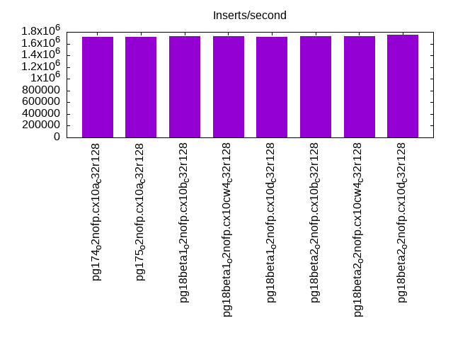
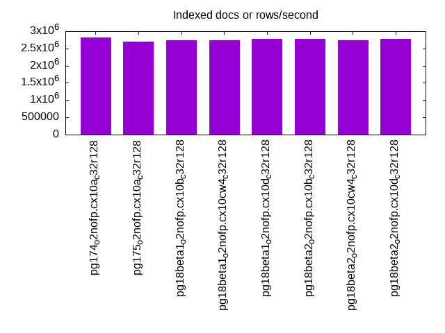
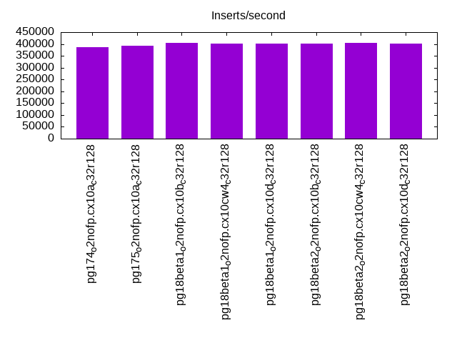
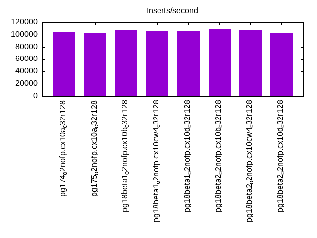
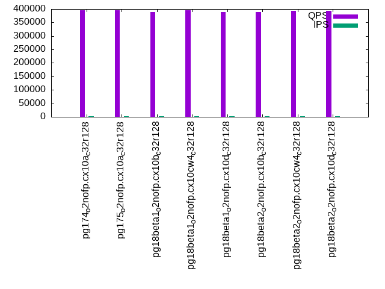
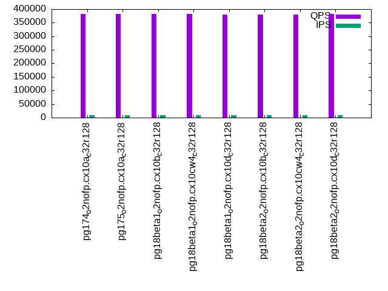
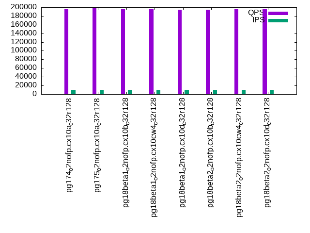
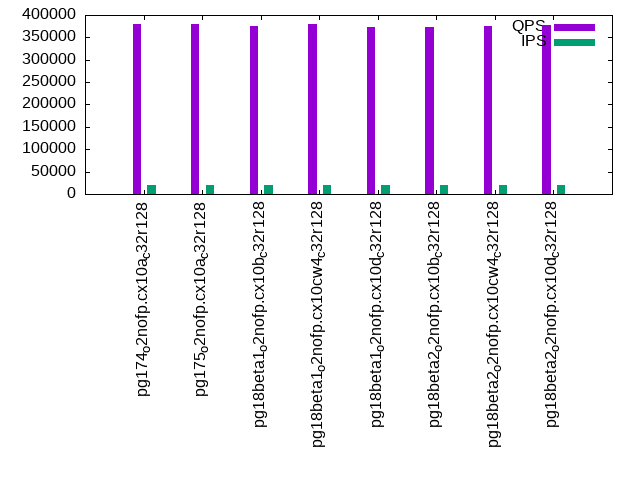
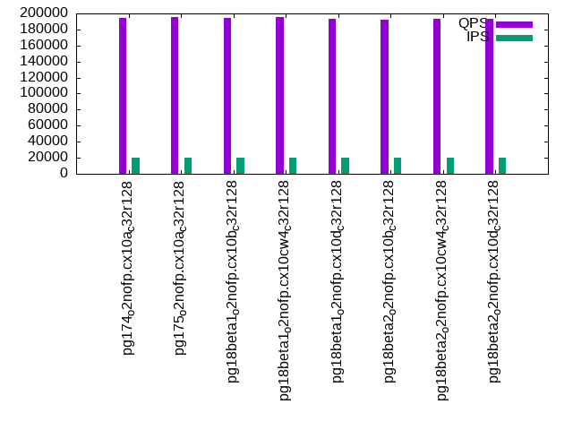

This is a report for the insert benchmark with 200M docs and 20 client(s). It is generated by scripts (bash, awk, sed) and Tufte might not be impressed. An overview of the insert benchmark is here and a short update is here. Below, by DBMS, I mean DBMS+version.config. An example is my8020.c10b40 where my means MySQL, 8020 is version 8.0.20 and c10b40 is the name for the configuration file.
The test server has 48 AMD cores, 128G RAM and RAID 10 with 2 NVMe devices. It is described here. The benchmark was run with 20 clients and there were 1 or 3 connections per client (1 for queries or inserts without rate limits, 1+1 for rate limited inserts+deletes). It uses 20 tables with a table per client. It loads 10M rows per table without secondary indexes, creates 3 secondary indexes per table, then inserts 16m+4m rows per table with a delete per insert to avoid growing the table. It then does 6 read+write tests for 1800s each that do queries as fast as possible with 100,100,500,500,1000,1000 inserts/s and the same for deletes/s per client concurrent with the queries. The database is cached by Postgres. Clients and the DBMS share one server. The per-database configs are in the per-database subdirectories here.
The tested DBMS are:
The numbers are inserts/s for l.i0, l.i1 and l.i2, indexed docs (or rows) /s for l.x and queries/s for qr100, qp100 thru qr1000, qp1000" The values are the average rate over the entire test for inserts (IPS) and queries (QPS). The range of values for IPS and QPS is split into 3 parts: bottom 25%, middle 50%, top 25%. Values in the bottom 25% have a red background, values in the top 25% have a green background and values in the middle have no color. A gray background is used for values that can be ignored because the DBMS did not sustain the target insert rate. Red backgrounds are not used when the minimum value is within 80% of the max value.
| dbms | l.i0 | l.x | l.i1 | l.i2 | qr100 | qp100 | qr500 | qp500 | qr1000 | qp1000 |
|---|---|---|---|---|---|---|---|---|---|---|
| pg174_o2nofp.cx10a_c32r128 | 1709402 | 2816903 | 386007 | 104167 | 395158 | 197320 | 382722 | 195661 | 379160 | 194506 |
| pg175_o2nofp.cx10a_c32r128 | 1709402 | 2702704 | 394089 | 102960 | 395337 | 198067 | 382515 | 197586 | 378895 | 196025 |
| pg18beta1_o2nofp.cx10b_c32r128 | 1724138 | 2739727 | 403531 | 107095 | 389626 | 196234 | 381016 | 195721 | 375844 | 193883 |
| pg18beta1_o2nofp.cx10cw4_c32r128 | 1724138 | 2739727 | 402516 | 105263 | 394628 | 197758 | 382306 | 196855 | 380142 | 195350 |
| pg18beta1_o2nofp.cx10d_c32r128 | 1709402 | 2777779 | 402010 | 105402 | 387844 | 195817 | 380116 | 194291 | 372142 | 193014 |
| pg18beta2_o2nofp.cx10b_c32r128 | 1724138 | 2777779 | 402516 | 108844 | 388556 | 195689 | 378877 | 194856 | 374028 | 192619 |
| pg18beta2_o2nofp.cx10cw4_c32r128 | 1724138 | 2739727 | 404551 | 107527 | 393904 | 195961 | 380643 | 195419 | 375702 | 193496 |
| pg18beta2_o2nofp.cx10d_c32r128 | 1754386 | 2777779 | 400501 | 102302 | 392702 | 196612 | 382885 | 195338 | 377862 | 193708 |
This table has relative throughput, throughput for the DBMS relative to the DBMS in the first line, using the absolute throughput from the previous table. Values less than 0.95 have a yellow background. Values greater than 1.05 have a blue background.
| dbms | l.i0 | l.x | l.i1 | l.i2 | qr100 | qp100 | qr500 | qp500 | qr1000 | qp1000 |
|---|---|---|---|---|---|---|---|---|---|---|
| pg174_o2nofp.cx10a_c32r128 | 1.00 | 1.00 | 1.00 | 1.00 | 1.00 | 1.00 | 1.00 | 1.00 | 1.00 | 1.00 |
| pg175_o2nofp.cx10a_c32r128 | 1.00 | 0.96 | 1.02 | 0.99 | 1.00 | 1.00 | 1.00 | 1.01 | 1.00 | 1.01 |
| pg18beta1_o2nofp.cx10b_c32r128 | 1.01 | 0.97 | 1.05 | 1.03 | 0.99 | 0.99 | 1.00 | 1.00 | 0.99 | 1.00 |
| pg18beta1_o2nofp.cx10cw4_c32r128 | 1.01 | 0.97 | 1.04 | 1.01 | 1.00 | 1.00 | 1.00 | 1.01 | 1.00 | 1.00 |
| pg18beta1_o2nofp.cx10d_c32r128 | 1.00 | 0.99 | 1.04 | 1.01 | 0.98 | 0.99 | 0.99 | 0.99 | 0.98 | 0.99 |
| pg18beta2_o2nofp.cx10b_c32r128 | 1.01 | 0.99 | 1.04 | 1.04 | 0.98 | 0.99 | 0.99 | 1.00 | 0.99 | 0.99 |
| pg18beta2_o2nofp.cx10cw4_c32r128 | 1.01 | 0.97 | 1.05 | 1.03 | 1.00 | 0.99 | 0.99 | 1.00 | 0.99 | 0.99 |
| pg18beta2_o2nofp.cx10d_c32r128 | 1.03 | 0.99 | 1.04 | 0.98 | 0.99 | 1.00 | 1.00 | 1.00 | 1.00 | 1.00 |
This lists the average rate of inserts/s for the tests that do inserts concurrent with queries. For such tests the query rate is listed in the table above. The read+write tests are setup so that the insert rate should match the target rate every second. Cells that are not at least 95% of the target have a red background to indicate a failure to satisfy the target.
| dbms | qr100.L1 | qp100.L2 | qr500.L3 | qp500.L4 | qr1000.L5 | qp1000.L6 |
|---|---|---|---|---|---|---|
| pg174_o2nofp.cx10a_c32r128 | 1977 | 1977 | 9885 | 9885 | 19758 | 19758 |
| pg175_o2nofp.cx10a_c32r128 | 1977 | 1977 | 9874 | 9885 | 19758 | 19758 |
| pg18beta1_o2nofp.cx10b_c32r128 | 1976 | 1977 | 9879 | 9879 | 19758 | 19758 |
| pg18beta1_o2nofp.cx10cw4_c32r128 | 1977 | 1977 | 9885 | 9885 | 19758 | 19758 |
| pg18beta1_o2nofp.cx10d_c32r128 | 1977 | 1978 | 9885 | 9879 | 19758 | 19758 |
| pg18beta2_o2nofp.cx10b_c32r128 | 1977 | 1977 | 9885 | 9885 | 19758 | 19758 |
| pg18beta2_o2nofp.cx10cw4_c32r128 | 1977 | 1977 | 9885 | 9885 | 19758 | 19758 |
| pg18beta2_o2nofp.cx10d_c32r128 | 1977 | 1977 | 9885 | 9885 | 19758 | 19758 |
| target | 2000 | 2000 | 10000 | 10000 | 20000 | 20000 |
l.i0: load without secondary indexes. Graphs for performance per 1-second interval are here.
Average throughput:
Insert response time histogram: each cell has the percentage of responses that take <= the time in the header and max is the max response time in seconds. For the max column values in the top 25% of the range have a red background and in the bottom 25% of the range have a green background. The red background is not used when the min value is within 80% of the max value.
| dbms | 256us | 1ms | 4ms | 16ms | 64ms | 256ms | 1s | 4s | 16s | gt | max |
|---|---|---|---|---|---|---|---|---|---|---|---|
| pg174_o2nofp.cx10a_c32r128 | 94.027 | 5.940 | 0.015 | 0.002 | 0.010 | 0.006 | 0.639 | ||||
| pg175_o2nofp.cx10a_c32r128 | 94.811 | 5.148 | 0.019 | 0.003 | 0.012 | 0.006 | 0.634 | ||||
| pg18beta1_o2nofp.cx10b_c32r128 | 95.284 | 4.661 | 0.025 | 0.013 | 0.012 | 0.005 | 0.451 | ||||
| pg18beta1_o2nofp.cx10cw4_c32r128 | 95.602 | 4.350 | 0.020 | 0.011 | 0.010 | 0.008 | 0.544 | ||||
| pg18beta1_o2nofp.cx10d_c32r128 | 95.422 | 4.534 | 0.021 | 0.007 | 0.009 | 0.007 | 0.550 | ||||
| pg18beta2_o2nofp.cx10b_c32r128 | 95.921 | 4.027 | 0.024 | 0.012 | 0.009 | 0.007 | 0.597 | ||||
| pg18beta2_o2nofp.cx10cw4_c32r128 | 95.562 | 4.383 | 0.023 | 0.013 | 0.014 | 0.005 | 0.485 | ||||
| pg18beta2_o2nofp.cx10d_c32r128 | 95.773 | 4.169 | 0.028 | 0.013 | 0.014 | 0.004 | 0.379 |
Performance metrics for the DBMS listed above. Some are normalized by throughput, others are not. Legend for results is here.
ips qps rps rmbps wps wmbps rpq rkbpq wpi wkbpi csps cpups cspq cpupq dbgb1 dbgb2 rss maxop p50 p99 tag 1709402 0 1 0.0 6861.5 722.7 0.000 0.000 0.004 0.433 287250 45.3 0.168 13 19.1 51.7 1.4 0.639 112979 41556 pg174_o2nofp.cx10a_c32r128 1709402 0 4 0.0 6917.3 730.3 0.000 0.000 0.004 0.437 276641 47.2 0.162 13 19.1 51.7 1.4 0.634 113944 40887 pg175_o2nofp.cx10a_c32r128 1724138 0 77 2.2 6848.9 724.0 0.000 0.001 0.004 0.430 264641 47.5 0.153 13 19.1 51.7 1.4 0.451 114777 55141 pg18beta1_o2nofp.cx10b_c32r128 1724138 0 4 0.0 6889.5 730.9 0.000 0.000 0.004 0.434 267553 46.9 0.155 13 19.1 51.7 1.4 0.544 115962 45751 pg18beta1_o2nofp.cx10cw4_c32r128 1709402 0 4 0.0 6797.1 719.9 0.000 0.000 0.004 0.431 268945 46.9 0.157 13 19.1 51.7 7.9 0.550 115276 45851 pg18beta1_o2nofp.cx10d_c32r128 1724138 0 4 0.0 6839.3 724.7 0.000 0.000 0.004 0.430 263266 46.7 0.153 13 19.1 51.7 0.5 0.597 116425 43167 pg18beta2_o2nofp.cx10b_c32r128 1724138 0 3 0.0 6844.8 724.4 0.000 0.000 0.004 0.430 265107 46.9 0.154 13 19.1 51.7 0.4 0.485 116775 47748 pg18beta2_o2nofp.cx10cw4_c32r128 1754386 0 4 0.0 6881.9 729.4 0.000 0.000 0.004 0.426 266590 46.6 0.152 13 19.1 51.7 11.6 0.379 116175 45351 pg18beta2_o2nofp.cx10d_c32r128
l.x: create secondary indexes.
Average throughput:
Performance metrics for the DBMS listed above. Some are normalized by throughput, others are not. Legend for results is here.
ips qps rps rmbps wps wmbps rpq rkbpq wpi wkbpi csps cpups cspq cpupq dbgb1 dbgb2 rss maxop p50 p99 tag 2816903 0 0 0.0 7278.5 845.3 0.000 0.000 0.003 0.307 41312 15.9 0.015 3 38.4 88.5 7.2 0.043 NA NA pg174_o2nofp.cx10a_c32r128 2702704 0 4 0.0 6783.6 787.8 0.000 0.000 0.003 0.298 41634 16.6 0.015 3 38.4 88.5 6.4 0.036 NA NA pg175_o2nofp.cx10a_c32r128 2739727 0 5 0.0 7214.5 835.9 0.000 0.000 0.003 0.312 35705 17.4 0.013 3 38.4 88.5 6.4 0.036 NA NA pg18beta1_o2nofp.cx10b_c32r128 2739727 0 5 0.0 7036.3 817.1 0.000 0.000 0.003 0.305 36225 17.4 0.013 3 38.4 88.5 6.4 0.043 NA NA pg18beta1_o2nofp.cx10cw4_c32r128 2777779 0 5 0.0 7269.5 844.4 0.000 0.000 0.003 0.311 35652 17.4 0.013 3 38.4 88.5 6.4 0.036 NA NA pg18beta1_o2nofp.cx10d_c32r128 2777779 0 5 0.0 7221.6 838.3 0.000 0.000 0.003 0.309 35312 17.6 0.013 3 38.4 88.5 7.2 0.027 NA NA pg18beta2_o2nofp.cx10b_c32r128 2739727 0 5 0.0 7201.3 835.8 0.000 0.000 0.003 0.312 36362 17.5 0.013 3 38.4 88.5 6.4 0.044 NA NA pg18beta2_o2nofp.cx10cw4_c32r128 2777779 0 5 0.0 7382.7 857.2 0.000 0.000 0.003 0.316 36698 17.5 0.013 3 38.4 88.5 7.1 0.034 NA NA pg18beta2_o2nofp.cx10d_c32r128
l.i1: continue load after secondary indexes created with 50 inserts per transaction. Graphs for performance per 1-second interval are here.
Average throughput:
Insert response time histogram: each cell has the percentage of responses that take <= the time in the header and max is the max response time in seconds. For the max column values in the top 25% of the range have a red background and in the bottom 25% of the range have a green background. The red background is not used when the min value is within 80% of the max value.
| dbms | 256us | 1ms | 4ms | 16ms | 64ms | 256ms | 1s | 4s | 16s | gt | max |
|---|---|---|---|---|---|---|---|---|---|---|---|
| pg174_o2nofp.cx10a_c32r128 | 2.012 | 89.825 | 7.624 | 0.532 | 0.006 | 0.001 | 0.998 | ||||
| pg175_o2nofp.cx10a_c32r128 | 2.045 | 90.037 | 7.370 | 0.543 | 0.004 | 0.001 | 0.703 | ||||
| pg18beta1_o2nofp.cx10b_c32r128 | 1.966 | 90.856 | 6.537 | 0.636 | 0.005 | nonzero | 0.598 | ||||
| pg18beta1_o2nofp.cx10cw4_c32r128 | 1.781 | 90.640 | 6.970 | 0.605 | 0.003 | 0.001 | 0.490 | ||||
| pg18beta1_o2nofp.cx10d_c32r128 | 1.593 | 90.759 | 7.010 | 0.632 | 0.005 | 0.001 | 0.474 | ||||
| pg18beta2_o2nofp.cx10b_c32r128 | 2.091 | 90.756 | 6.528 | 0.620 | 0.004 | 0.001 | 0.700 | ||||
| pg18beta2_o2nofp.cx10cw4_c32r128 | 1.820 | 90.748 | 6.811 | 0.615 | 0.005 | 0.001 | 0.452 | ||||
| pg18beta2_o2nofp.cx10d_c32r128 | 1.950 | 90.572 | 6.846 | 0.626 | 0.005 | 0.001 | 0.738 |
Delete response time histogram: each cell has the percentage of responses that take <= the time in the header and max is the max response time in seconds. For the max column values in the top 25% of the range have a red background and in the bottom 25% of the range have a green background. The red background is not used when the min value is within 80% of the max value.
| dbms | 256us | 1ms | 4ms | 16ms | 64ms | 256ms | 1s | 4s | 16s | gt | max |
|---|---|---|---|---|---|---|---|---|---|---|---|
| pg174_o2nofp.cx10a_c32r128 | 20.618 | 76.103 | 3.026 | 0.249 | 0.004 | nonzero | nonzero | 1.074 | |||
| pg175_o2nofp.cx10a_c32r128 | 20.908 | 75.901 | 2.935 | 0.252 | 0.003 | 0.001 | 0.702 | ||||
| pg18beta1_o2nofp.cx10b_c32r128 | 20.957 | 76.010 | 2.691 | 0.338 | 0.004 | nonzero | 0.598 | ||||
| pg18beta1_o2nofp.cx10cw4_c32r128 | 20.820 | 76.204 | 2.657 | 0.316 | 0.002 | nonzero | 0.494 | ||||
| pg18beta1_o2nofp.cx10d_c32r128 | 21.072 | 75.904 | 2.681 | 0.340 | 0.003 | 0.001 | 0.464 | ||||
| pg18beta2_o2nofp.cx10b_c32r128 | 20.652 | 76.423 | 2.594 | 0.328 | 0.003 | nonzero | 0.685 | ||||
| pg18beta2_o2nofp.cx10cw4_c32r128 | 22.199 | 75.114 | 2.374 | 0.308 | 0.004 | nonzero | 0.450 | ||||
| pg18beta2_o2nofp.cx10d_c32r128 | 21.555 | 75.611 | 2.507 | 0.324 | 0.003 | nonzero | 0.737 |
Performance metrics for the DBMS listed above. Some are normalized by throughput, others are not. Legend for results is here.
ips qps rps rmbps wps wmbps rpq rkbpq wpi wkbpi csps cpups cspq cpupq dbgb1 dbgb2 rss maxop p50 p99 tag 386007 0 686 3.1 6263.2 599.6 0.002 0.008 0.016 1.591 248886 52.2 0.645 65 55.9 152.0 23.9 0.998 22675 3146 pg174_o2nofp.cx10a_c32r128 394089 0 724 3.2 6446.9 612.1 0.002 0.008 0.016 1.590 251099 53.5 0.637 65 55.9 152.0 10.7 0.703 22930 3346 pg175_o2nofp.cx10a_c32r128 403531 0 90 0.4 6647.7 631.5 0.000 0.001 0.016 1.602 247938 54.5 0.614 65 56.2 152.2 32.1 0.598 23257 3596 pg18beta1_o2nofp.cx10b_c32r128 402516 0 87 0.5 6555.0 624.7 0.000 0.001 0.016 1.589 261059 54.2 0.649 65 55.8 151.9 21.5 0.490 22885 3546 pg18beta1_o2nofp.cx10cw4_c32r128 402010 0 111 0.5 6598.0 629.0 0.000 0.001 0.016 1.602 258977 54.3 0.644 65 55.9 152.0 27.6 0.474 22894 3596 pg18beta1_o2nofp.cx10d_c32r128 402516 0 93 0.4 6592.5 627.9 0.000 0.001 0.016 1.597 248074 54.4 0.616 65 56.6 152.7 34.4 0.700 23275 3348 pg18beta2_o2nofp.cx10b_c32r128 404551 0 90 0.5 6604.7 627.1 0.000 0.001 0.016 1.587 263144 53.8 0.650 64 55.9 151.9 37.8 0.452 23020 3496 pg18beta2_o2nofp.cx10cw4_c32r128 400501 0 95 0.5 6551.3 623.6 0.000 0.001 0.016 1.594 254150 53.6 0.635 64 55.9 152.0 35.4 0.738 23075 3498 pg18beta2_o2nofp.cx10d_c32r128
l.i2: continue load after secondary indexes created with 5 inserts per transaction. Graphs for performance per 1-second interval are here.
Average throughput:
Insert response time histogram: each cell has the percentage of responses that take <= the time in the header and max is the max response time in seconds. For the max column values in the top 25% of the range have a red background and in the bottom 25% of the range have a green background. The red background is not used when the min value is within 80% of the max value.
| dbms | 256us | 1ms | 4ms | 16ms | 64ms | 256ms | 1s | 4s | 16s | gt | max |
|---|---|---|---|---|---|---|---|---|---|---|---|
| pg174_o2nofp.cx10a_c32r128 | 92.669 | 7.123 | 0.199 | 0.009 | nonzero | nonzero | 0.071 | ||||
| pg175_o2nofp.cx10a_c32r128 | 92.783 | 7.022 | 0.181 | 0.014 | nonzero | 0.064 | |||||
| pg18beta1_o2nofp.cx10b_c32r128 | 92.168 | 7.621 | 0.186 | 0.024 | nonzero | 0.063 | |||||
| pg18beta1_o2nofp.cx10cw4_c32r128 | 92.477 | 7.328 | 0.176 | 0.019 | 0.001 | nonzero | 0.068 | ||||
| pg18beta1_o2nofp.cx10d_c32r128 | 92.673 | 7.138 | 0.174 | 0.015 | nonzero | 0.063 | |||||
| pg18beta2_o2nofp.cx10b_c32r128 | 92.142 | 7.663 | 0.186 | 0.009 | nonzero | 0.019 | |||||
| pg18beta2_o2nofp.cx10cw4_c32r128 | 92.561 | 7.243 | 0.188 | 0.009 | nonzero | nonzero | 0.070 | ||||
| pg18beta2_o2nofp.cx10d_c32r128 | 92.413 | 7.397 | 0.175 | 0.015 | nonzero | 0.061 |
Delete response time histogram: each cell has the percentage of responses that take <= the time in the header and max is the max response time in seconds. For the max column values in the top 25% of the range have a red background and in the bottom 25% of the range have a green background. The red background is not used when the min value is within 80% of the max value.
| dbms | 256us | 1ms | 4ms | 16ms | 64ms | 256ms | 1s | 4s | 16s | gt | max |
|---|---|---|---|---|---|---|---|---|---|---|---|
| pg174_o2nofp.cx10a_c32r128 | 3.208 | 59.110 | 37.638 | 0.044 | nonzero | nonzero | 0.072 | ||||
| pg175_o2nofp.cx10a_c32r128 | 3.302 | 56.252 | 40.389 | 0.057 | nonzero | nonzero | 0.064 | ||||
| pg18beta1_o2nofp.cx10b_c32r128 | 2.584 | 62.020 | 35.320 | 0.075 | 0.001 | 0.064 | |||||
| pg18beta1_o2nofp.cx10cw4_c32r128 | 2.701 | 61.289 | 35.942 | 0.067 | 0.001 | nonzero | 0.068 | ||||
| pg18beta1_o2nofp.cx10d_c32r128 | 2.725 | 60.149 | 37.066 | 0.058 | 0.001 | 0.063 | |||||
| pg18beta2_o2nofp.cx10b_c32r128 | 2.594 | 65.027 | 32.330 | 0.049 | nonzero | 0.026 | |||||
| pg18beta2_o2nofp.cx10cw4_c32r128 | 2.645 | 63.564 | 33.741 | 0.049 | nonzero | nonzero | 0.070 | ||||
| pg18beta2_o2nofp.cx10d_c32r128 | 2.683 | 62.363 | 34.893 | 0.060 | 0.001 | 0.061 |
Performance metrics for the DBMS listed above. Some are normalized by throughput, others are not. Legend for results is here.
ips qps rps rmbps wps wmbps rpq rkbpq wpi wkbpi csps cpups cspq cpupq dbgb1 dbgb2 rss maxop p50 p99 tag 104167 0 1 0.0 1555.6 148.7 0.000 0.000 0.015 1.462 390251 53.0 3.746 244 56.1 152.2 1.2 0.071 4036 2447 pg174_o2nofp.cx10a_c32r128 102960 0 0 0.0 1569.2 149.7 0.000 0.000 0.015 1.489 386972 53.1 3.758 248 56.2 152.2 12.6 0.064 4287 3061 pg175_o2nofp.cx10a_c32r128 107095 0 1 0.0 1600.1 153.6 0.000 0.000 0.015 1.469 398333 54.6 3.719 245 56.4 152.5 5.6 0.063 5079 2233 pg18beta1_o2nofp.cx10b_c32r128 105263 0 0 0.0 1583.0 152.0 0.000 0.000 0.015 1.478 391081 53.8 3.715 245 56.0 152.1 38.5 0.068 4945 2248 pg18beta1_o2nofp.cx10cw4_c32r128 105402 0 1 0.0 1551.7 148.6 0.000 0.000 0.015 1.443 391615 53.8 3.715 245 56.1 152.2 4.1 0.063 4825 2347 pg18beta1_o2nofp.cx10d_c32r128 108844 0 0 0.0 1648.8 157.6 0.000 0.000 0.015 1.483 400096 54.6 3.676 241 56.8 152.9 6.2 0.019 5147 2298 pg18beta2_o2nofp.cx10b_c32r128 107527 0 1 0.0 1632.5 156.2 0.000 0.000 0.015 1.487 396654 54.4 3.689 243 56.1 152.2 2.3 0.070 5016 2303 pg18beta2_o2nofp.cx10cw4_c32r128 102302 0 0 0.0 1551.7 148.2 0.000 0.000 0.015 1.484 381713 52.1 3.731 244 56.1 152.2 22.3 0.061 4686 2303 pg18beta2_o2nofp.cx10d_c32r128
qr100.L1: range queries with 100 insert/s per client. Graphs for performance per 1-second interval are here.
Average throughput:
Query response time histogram: each cell has the percentage of responses that take <= the time in the header and max is the max response time in seconds. For max values in the top 25% of the range have a red background and in the bottom 25% of the range have a green background. The red background is not used when the min value is within 80% of the max value.
| dbms | 256us | 1ms | 4ms | 16ms | 64ms | 256ms | 1s | 4s | 16s | gt | max |
|---|---|---|---|---|---|---|---|---|---|---|---|
| pg174_o2nofp.cx10a_c32r128 | 99.998 | 0.001 | 0.001 | nonzero | 0.008 | ||||||
| pg175_o2nofp.cx10a_c32r128 | 99.998 | 0.001 | 0.001 | nonzero | nonzero | 0.016 | |||||
| pg18beta1_o2nofp.cx10b_c32r128 | 99.998 | 0.001 | 0.001 | nonzero | 0.005 | ||||||
| pg18beta1_o2nofp.cx10cw4_c32r128 | 99.998 | 0.001 | 0.001 | nonzero | 0.008 | ||||||
| pg18beta1_o2nofp.cx10d_c32r128 | 99.998 | 0.001 | 0.001 | nonzero | 0.008 | ||||||
| pg18beta2_o2nofp.cx10b_c32r128 | 99.998 | 0.001 | 0.001 | nonzero | nonzero | 0.028 | |||||
| pg18beta2_o2nofp.cx10cw4_c32r128 | 99.998 | 0.001 | 0.001 | nonzero | 0.009 | ||||||
| pg18beta2_o2nofp.cx10d_c32r128 | 99.998 | 0.001 | 0.001 | nonzero | 0.009 |
Insert response time histogram: each cell has the percentage of responses that take <= the time in the header and max is the max response time in seconds. For max values in the top 25% of the range have a red background and in the bottom 25% of the range have a green background. The red background is not used when the min value is within 80% of the max value.
| dbms | 256us | 1ms | 4ms | 16ms | 64ms | 256ms | 1s | 4s | 16s | gt | max |
|---|---|---|---|---|---|---|---|---|---|---|---|
| pg174_o2nofp.cx10a_c32r128 | 0.010 | 99.725 | 0.265 | 0.009 | |||||||
| pg175_o2nofp.cx10a_c32r128 | 0.001 | 99.701 | 0.297 | 0.012 | |||||||
| pg18beta1_o2nofp.cx10b_c32r128 | 0.013 | 99.706 | 0.282 | 0.014 | |||||||
| pg18beta1_o2nofp.cx10cw4_c32r128 | 0.019 | 99.753 | 0.228 | 0.010 | |||||||
| pg18beta1_o2nofp.cx10d_c32r128 | 0.003 | 99.747 | 0.250 | 0.011 | |||||||
| pg18beta2_o2nofp.cx10b_c32r128 | 0.008 | 99.708 | 0.279 | 0.004 | 0.028 | ||||||
| pg18beta2_o2nofp.cx10cw4_c32r128 | 0.021 | 99.721 | 0.258 | 0.010 | |||||||
| pg18beta2_o2nofp.cx10d_c32r128 | 99.694 | 0.306 | 0.015 |
Delete response time histogram: each cell has the percentage of responses that take <= the time in the header and max is the max response time in seconds. For max values in the top 25% of the range have a red background and in the bottom 25% of the range have a green background. The red background is not used when the min value is within 80% of the max value.
| dbms | 256us | 1ms | 4ms | 16ms | 64ms | 256ms | 1s | 4s | 16s | gt | max |
|---|---|---|---|---|---|---|---|---|---|---|---|
| pg174_o2nofp.cx10a_c32r128 | 67.778 | 32.193 | 0.029 | 0.009 | |||||||
| pg175_o2nofp.cx10a_c32r128 | 67.924 | 32.062 | 0.011 | 0.003 | 0.021 | ||||||
| pg18beta1_o2nofp.cx10b_c32r128 | 67.972 | 32.015 | 0.013 | 0.013 | |||||||
| pg18beta1_o2nofp.cx10cw4_c32r128 | 68.243 | 31.751 | 0.006 | 0.005 | |||||||
| pg18beta1_o2nofp.cx10d_c32r128 | 67.464 | 32.519 | 0.017 | 0.011 | |||||||
| pg18beta2_o2nofp.cx10b_c32r128 | 68.872 | 31.110 | 0.017 | 0.001 | 0.026 | ||||||
| pg18beta2_o2nofp.cx10cw4_c32r128 | 69.632 | 30.347 | 0.021 | 0.007 | |||||||
| pg18beta2_o2nofp.cx10d_c32r128 | 69.935 | 30.047 | 0.018 | 0.015 |
Performance metrics for the DBMS listed above. Some are normalized by throughput, others are not. Legend for results is here.
ips qps rps rmbps wps wmbps rpq rkbpq wpi wkbpi csps cpups cspq cpupq dbgb1 dbgb2 rss maxop p50 p99 tag 1977 395158 0 0.0 123.0 10.5 0.000 0.000 0.062 5.420 1505072 42.8 3.809 52 56.1 152.1 0.5 0.008 20090 19435 pg174_o2nofp.cx10a_c32r128 1977 395337 0 0.0 126.3 10.5 0.000 0.000 0.064 5.416 1505834 42.7 3.809 52 56.2 152.2 0.4 0.016 20058 19323 pg175_o2nofp.cx10a_c32r128 1976 389626 0 0.0 120.9 10.5 0.000 0.000 0.061 5.417 1485078 42.7 3.812 53 56.4 152.4 0.5 0.005 19483 18834 pg18beta1_o2nofp.cx10b_c32r128 1977 394628 0 0.0 121.1 10.4 0.000 0.000 0.061 5.411 1503340 42.9 3.810 52 56.0 152.1 0.5 0.008 19786 19131 pg18beta1_o2nofp.cx10cw4_c32r128 1977 387844 0 0.0 120.3 10.5 0.000 0.000 0.061 5.415 1477471 42.7 3.809 53 56.1 152.2 0.4 0.008 19691 18987 pg18beta1_o2nofp.cx10d_c32r128 1977 388556 0 0.0 121.4 10.4 0.000 0.000 0.061 5.401 1480207 42.8 3.810 53 56.8 152.9 0.5 0.028 19834 19136 pg18beta2_o2nofp.cx10b_c32r128 1977 393904 0 0.0 121.2 10.4 0.000 0.000 0.061 5.409 1500500 42.9 3.809 52 56.1 152.1 0.5 0.009 20098 19409 pg18beta2_o2nofp.cx10cw4_c32r128 1977 392702 0 0.0 126.2 10.5 0.000 0.000 0.064 5.423 1495907 42.8 3.809 52 56.1 152.2 0.5 0.009 19819 19051 pg18beta2_o2nofp.cx10d_c32r128
qp100.L2: point queries with 100 insert/s per client. Graphs for performance per 1-second interval are here.
Average throughput:
Query response time histogram: each cell has the percentage of responses that take <= the time in the header and max is the max response time in seconds. For max values in the top 25% of the range have a red background and in the bottom 25% of the range have a green background. The red background is not used when the min value is within 80% of the max value.
| dbms | 256us | 1ms | 4ms | 16ms | 64ms | 256ms | 1s | 4s | 16s | gt | max |
|---|---|---|---|---|---|---|---|---|---|---|---|
| pg174_o2nofp.cx10a_c32r128 | 99.995 | 0.004 | 0.001 | nonzero | 0.010 | ||||||
| pg175_o2nofp.cx10a_c32r128 | 99.995 | 0.004 | 0.001 | nonzero | 0.010 | ||||||
| pg18beta1_o2nofp.cx10b_c32r128 | 99.995 | 0.004 | 0.001 | nonzero | 0.006 | ||||||
| pg18beta1_o2nofp.cx10cw4_c32r128 | 99.995 | 0.004 | 0.001 | nonzero | 0.008 | ||||||
| pg18beta1_o2nofp.cx10d_c32r128 | 99.995 | 0.004 | 0.001 | nonzero | 0.006 | ||||||
| pg18beta2_o2nofp.cx10b_c32r128 | 99.994 | 0.004 | 0.001 | nonzero | 0.008 | ||||||
| pg18beta2_o2nofp.cx10cw4_c32r128 | 99.995 | 0.004 | 0.001 | nonzero | 0.012 | ||||||
| pg18beta2_o2nofp.cx10d_c32r128 | 99.994 | 0.004 | 0.001 | nonzero | 0.009 |
Insert response time histogram: each cell has the percentage of responses that take <= the time in the header and max is the max response time in seconds. For max values in the top 25% of the range have a red background and in the bottom 25% of the range have a green background. The red background is not used when the min value is within 80% of the max value.
| dbms | 256us | 1ms | 4ms | 16ms | 64ms | 256ms | 1s | 4s | 16s | gt | max |
|---|---|---|---|---|---|---|---|---|---|---|---|
| pg174_o2nofp.cx10a_c32r128 | 99.694 | 0.306 | 0.012 | ||||||||
| pg175_o2nofp.cx10a_c32r128 | 99.736 | 0.264 | 0.014 | ||||||||
| pg18beta1_o2nofp.cx10b_c32r128 | 99.743 | 0.251 | 0.006 | 0.024 | |||||||
| pg18beta1_o2nofp.cx10cw4_c32r128 | 99.750 | 0.246 | 0.004 | 0.020 | |||||||
| pg18beta1_o2nofp.cx10d_c32r128 | 99.758 | 0.236 | 0.006 | 0.021 | |||||||
| pg18beta2_o2nofp.cx10b_c32r128 | 99.731 | 0.269 | 0.014 | ||||||||
| pg18beta2_o2nofp.cx10cw4_c32r128 | 99.700 | 0.293 | 0.007 | 0.025 | |||||||
| pg18beta2_o2nofp.cx10d_c32r128 | 99.614 | 0.385 | 0.001 | 0.024 |
Delete response time histogram: each cell has the percentage of responses that take <= the time in the header and max is the max response time in seconds. For max values in the top 25% of the range have a red background and in the bottom 25% of the range have a green background. The red background is not used when the min value is within 80% of the max value.
| dbms | 256us | 1ms | 4ms | 16ms | 64ms | 256ms | 1s | 4s | 16s | gt | max |
|---|---|---|---|---|---|---|---|---|---|---|---|
| pg174_o2nofp.cx10a_c32r128 | 19.518 | 80.404 | 0.078 | 0.009 | |||||||
| pg175_o2nofp.cx10a_c32r128 | 19.089 | 80.849 | 0.062 | 0.009 | |||||||
| pg18beta1_o2nofp.cx10b_c32r128 | 19.206 | 80.722 | 0.072 | 0.010 | |||||||
| pg18beta1_o2nofp.cx10cw4_c32r128 | 19.774 | 80.165 | 0.060 | 0.001 | 0.019 | ||||||
| pg18beta1_o2nofp.cx10d_c32r128 | 19.250 | 80.692 | 0.057 | 0.001 | 0.020 | ||||||
| pg18beta2_o2nofp.cx10b_c32r128 | 16.367 | 83.574 | 0.060 | 0.010 | |||||||
| pg18beta2_o2nofp.cx10cw4_c32r128 | 18.606 | 81.333 | 0.061 | 0.011 | |||||||
| pg18beta2_o2nofp.cx10d_c32r128 | 20.453 | 79.454 | 0.093 | 0.012 |
Performance metrics for the DBMS listed above. Some are normalized by throughput, others are not. Legend for results is here.
ips qps rps rmbps wps wmbps rpq rkbpq wpi wkbpi csps cpups cspq cpupq dbgb1 dbgb2 rss maxop p50 p99 tag 1977 197320 0 0.0 339.8 17.8 0.000 0.000 0.172 9.223 760092 41.5 3.852 101 56.1 149.0 0.5 0.010 10005 9749 pg174_o2nofp.cx10a_c32r128 1977 198067 0 0.0 343.0 17.8 0.000 0.000 0.174 9.235 763054 41.1 3.852 100 56.2 149.0 0.5 0.010 10021 9781 pg175_o2nofp.cx10a_c32r128 1977 196234 0 0.0 337.8 17.8 0.000 0.000 0.171 9.223 756087 41.4 3.853 101 56.4 149.3 0.1 0.006 9893 9702 pg18beta1_o2nofp.cx10b_c32r128 1977 197758 0 0.0 338.8 17.8 0.000 0.000 0.171 9.216 761899 41.3 3.853 100 56.1 148.8 0.5 0.008 10101 9893 pg18beta1_o2nofp.cx10cw4_c32r128 1978 195817 0 0.0 337.9 17.8 0.000 0.000 0.171 9.214 754018 41.3 3.851 101 56.1 149.0 0.4 0.006 9925 9717 pg18beta1_o2nofp.cx10d_c32r128 1977 195689 1 0.0 340.4 17.9 0.000 0.000 0.172 9.249 753950 41.4 3.853 102 56.8 149.7 0.5 0.008 9724 9526 pg18beta2_o2nofp.cx10b_c32r128 1977 195961 0 0.0 337.8 17.8 0.000 0.000 0.171 9.218 754949 41.5 3.853 102 56.1 148.9 0.5 0.012 10037 9845 pg18beta2_o2nofp.cx10cw4_c32r128 1977 196612 0 0.0 338.1 17.8 0.000 0.000 0.171 9.224 757515 41.3 3.853 101 56.1 149.1 0.5 0.009 10021 9813 pg18beta2_o2nofp.cx10d_c32r128
qr500.L3: range queries with 500 insert/s per client. Graphs for performance per 1-second interval are here.
Average throughput:
Query response time histogram: each cell has the percentage of responses that take <= the time in the header and max is the max response time in seconds. For max values in the top 25% of the range have a red background and in the bottom 25% of the range have a green background. The red background is not used when the min value is within 80% of the max value.
| dbms | 256us | 1ms | 4ms | 16ms | 64ms | 256ms | 1s | 4s | 16s | gt | max |
|---|---|---|---|---|---|---|---|---|---|---|---|
| pg174_o2nofp.cx10a_c32r128 | 99.994 | 0.003 | 0.003 | nonzero | nonzero | nonzero | 0.065 | ||||
| pg175_o2nofp.cx10a_c32r128 | 99.994 | 0.003 | 0.003 | nonzero | nonzero | nonzero | 0.065 | ||||
| pg18beta1_o2nofp.cx10b_c32r128 | 99.994 | 0.003 | 0.003 | nonzero | nonzero | 0.062 | |||||
| pg18beta1_o2nofp.cx10cw4_c32r128 | 99.994 | 0.003 | 0.003 | nonzero | nonzero | 0.063 | |||||
| pg18beta1_o2nofp.cx10d_c32r128 | 99.994 | 0.003 | 0.003 | nonzero | nonzero | nonzero | 0.069 | ||||
| pg18beta2_o2nofp.cx10b_c32r128 | 99.994 | 0.003 | 0.003 | nonzero | nonzero | nonzero | 0.080 | ||||
| pg18beta2_o2nofp.cx10cw4_c32r128 | 99.994 | 0.003 | 0.003 | nonzero | nonzero | nonzero | 0.076 | ||||
| pg18beta2_o2nofp.cx10d_c32r128 | 99.994 | 0.003 | 0.003 | nonzero | nonzero | nonzero | 0.074 |
Insert response time histogram: each cell has the percentage of responses that take <= the time in the header and max is the max response time in seconds. For max values in the top 25% of the range have a red background and in the bottom 25% of the range have a green background. The red background is not used when the min value is within 80% of the max value.
| dbms | 256us | 1ms | 4ms | 16ms | 64ms | 256ms | 1s | 4s | 16s | gt | max |
|---|---|---|---|---|---|---|---|---|---|---|---|
| pg174_o2nofp.cx10a_c32r128 | 10.428 | 88.583 | 0.961 | 0.028 | 0.032 | ||||||
| pg175_o2nofp.cx10a_c32r128 | 5.807 | 93.497 | 0.682 | 0.014 | 0.023 | ||||||
| pg18beta1_o2nofp.cx10b_c32r128 | 11.692 | 87.193 | 1.076 | 0.039 | 0.037 | ||||||
| pg18beta1_o2nofp.cx10cw4_c32r128 | 11.482 | 87.661 | 0.828 | 0.029 | 0.053 | ||||||
| pg18beta1_o2nofp.cx10d_c32r128 | 9.155 | 89.767 | 1.026 | 0.052 | 0.035 | ||||||
| pg18beta2_o2nofp.cx10b_c32r128 | 6.109 | 93.154 | 0.703 | 0.034 | 0.042 | ||||||
| pg18beta2_o2nofp.cx10cw4_c32r128 | 10.371 | 88.733 | 0.864 | 0.033 | 0.030 | ||||||
| pg18beta2_o2nofp.cx10d_c32r128 | 12.166 | 86.667 | 1.105 | 0.062 | 0.033 |
Delete response time histogram: each cell has the percentage of responses that take <= the time in the header and max is the max response time in seconds. For max values in the top 25% of the range have a red background and in the bottom 25% of the range have a green background. The red background is not used when the min value is within 80% of the max value.
| dbms | 256us | 1ms | 4ms | 16ms | 64ms | 256ms | 1s | 4s | 16s | gt | max |
|---|---|---|---|---|---|---|---|---|---|---|---|
| pg174_o2nofp.cx10a_c32r128 | 54.087 | 45.333 | 0.569 | 0.011 | 0.026 | ||||||
| pg175_o2nofp.cx10a_c32r128 | 52.480 | 47.056 | 0.458 | 0.006 | 0.021 | ||||||
| pg18beta1_o2nofp.cx10b_c32r128 | 51.549 | 47.774 | 0.657 | 0.021 | 0.031 | ||||||
| pg18beta1_o2nofp.cx10cw4_c32r128 | 52.778 | 46.708 | 0.496 | 0.018 | 0.052 | ||||||
| pg18beta1_o2nofp.cx10d_c32r128 | 52.249 | 47.137 | 0.593 | 0.021 | 0.027 | ||||||
| pg18beta2_o2nofp.cx10b_c32r128 | 49.759 | 49.778 | 0.444 | 0.019 | 0.038 | ||||||
| pg18beta2_o2nofp.cx10cw4_c32r128 | 52.822 | 46.653 | 0.516 | 0.010 | 0.020 | ||||||
| pg18beta2_o2nofp.cx10d_c32r128 | 54.280 | 45.080 | 0.613 | 0.027 | 0.025 |
Performance metrics for the DBMS listed above. Some are normalized by throughput, others are not. Legend for results is here.
ips qps rps rmbps wps wmbps rpq rkbpq wpi wkbpi csps cpups cspq cpupq dbgb1 dbgb2 rss maxop p50 p99 tag 9885 382722 0 0.0 512.5 27.4 0.000 0.000 0.052 2.838 1453421 43.5 3.798 55 56.2 142.4 48.5 0.065 19307 18131 pg174_o2nofp.cx10a_c32r128 9874 382515 0 0.0 515.3 27.4 0.000 0.000 0.052 2.843 1453940 43.6 3.801 55 56.3 142.4 35.0 0.065 19403 18044 pg175_o2nofp.cx10a_c32r128 9879 381016 0 0.0 513.3 27.9 0.000 0.000 0.052 2.889 1447699 43.5 3.800 55 56.4 142.6 15.1 0.062 19291 18172 pg18beta1_o2nofp.cx10b_c32r128 9885 382306 0 0.0 510.2 27.5 0.000 0.000 0.052 2.853 1451856 43.6 3.798 55 56.1 142.2 4.4 0.063 19252 18156 pg18beta1_o2nofp.cx10cw4_c32r128 9885 380116 0 0.0 510.7 27.7 0.000 0.000 0.052 2.875 1443351 43.5 3.797 55 56.2 142.4 6.4 0.069 19115 17996 pg18beta1_o2nofp.cx10d_c32r128 9885 378877 0 0.0 516.7 27.7 0.000 0.000 0.052 2.873 1438698 43.5 3.797 55 56.8 142.9 8.0 0.080 19051 17996 pg18beta2_o2nofp.cx10b_c32r128 9885 380643 0 0.0 508.9 27.7 0.000 0.000 0.051 2.864 1445181 43.6 3.797 55 56.1 142.2 7.0 0.076 18818 17709 pg18beta2_o2nofp.cx10cw4_c32r128 9885 382885 1 0.0 514.3 27.8 0.000 0.000 0.052 2.885 1454294 43.6 3.798 55 56.2 142.4 4.4 0.074 19429 18307 pg18beta2_o2nofp.cx10d_c32r128
qp500.L4: point queries with 500 insert/s per client. Graphs for performance per 1-second interval are here.
Average throughput:
Query response time histogram: each cell has the percentage of responses that take <= the time in the header and max is the max response time in seconds. For max values in the top 25% of the range have a red background and in the bottom 25% of the range have a green background. The red background is not used when the min value is within 80% of the max value.
| dbms | 256us | 1ms | 4ms | 16ms | 64ms | 256ms | 1s | 4s | 16s | gt | max |
|---|---|---|---|---|---|---|---|---|---|---|---|
| pg174_o2nofp.cx10a_c32r128 | 99.989 | 0.007 | 0.003 | nonzero | nonzero | nonzero | 0.089 | ||||
| pg175_o2nofp.cx10a_c32r128 | 99.990 | 0.007 | 0.003 | nonzero | nonzero | nonzero | 0.066 | ||||
| pg18beta1_o2nofp.cx10b_c32r128 | 99.989 | 0.007 | 0.004 | nonzero | nonzero | 0.064 | |||||
| pg18beta1_o2nofp.cx10cw4_c32r128 | 99.989 | 0.007 | 0.004 | nonzero | nonzero | nonzero | 0.069 | ||||
| pg18beta1_o2nofp.cx10d_c32r128 | 99.989 | 0.007 | 0.003 | nonzero | nonzero | 0.062 | |||||
| pg18beta2_o2nofp.cx10b_c32r128 | 99.989 | 0.008 | 0.003 | nonzero | nonzero | nonzero | 0.081 | ||||
| pg18beta2_o2nofp.cx10cw4_c32r128 | 99.989 | 0.007 | 0.004 | nonzero | nonzero | nonzero | 0.070 | ||||
| pg18beta2_o2nofp.cx10d_c32r128 | 99.989 | 0.008 | 0.003 | nonzero | nonzero | 0.023 |
Insert response time histogram: each cell has the percentage of responses that take <= the time in the header and max is the max response time in seconds. For max values in the top 25% of the range have a red background and in the bottom 25% of the range have a green background. The red background is not used when the min value is within 80% of the max value.
| dbms | 256us | 1ms | 4ms | 16ms | 64ms | 256ms | 1s | 4s | 16s | gt | max |
|---|---|---|---|---|---|---|---|---|---|---|---|
| pg174_o2nofp.cx10a_c32r128 | 11.164 | 88.131 | 0.683 | 0.021 | 0.045 | ||||||
| pg175_o2nofp.cx10a_c32r128 | 7.133 | 92.100 | 0.720 | 0.048 | 0.039 | ||||||
| pg18beta1_o2nofp.cx10b_c32r128 | 8.869 | 90.512 | 0.606 | 0.013 | 0.038 | ||||||
| pg18beta1_o2nofp.cx10cw4_c32r128 | 8.105 | 91.263 | 0.611 | 0.022 | 0.042 | ||||||
| pg18beta1_o2nofp.cx10d_c32r128 | 8.117 | 91.383 | 0.483 | 0.017 | 0.022 | ||||||
| pg18beta2_o2nofp.cx10b_c32r128 | 4.625 | 94.737 | 0.614 | 0.023 | 0.038 | ||||||
| pg18beta2_o2nofp.cx10cw4_c32r128 | 8.385 | 90.859 | 0.711 | 0.044 | 0.038 | ||||||
| pg18beta2_o2nofp.cx10d_c32r128 | 8.576 | 90.656 | 0.740 | 0.028 | 0.039 |
Delete response time histogram: each cell has the percentage of responses that take <= the time in the header and max is the max response time in seconds. For max values in the top 25% of the range have a red background and in the bottom 25% of the range have a green background. The red background is not used when the min value is within 80% of the max value.
| dbms | 256us | 1ms | 4ms | 16ms | 64ms | 256ms | 1s | 4s | 16s | gt | max |
|---|---|---|---|---|---|---|---|---|---|---|---|
| pg174_o2nofp.cx10a_c32r128 | 47.969 | 51.501 | 0.516 | 0.014 | 0.026 | ||||||
| pg175_o2nofp.cx10a_c32r128 | 47.044 | 52.360 | 0.555 | 0.041 | 0.038 | ||||||
| pg18beta1_o2nofp.cx10b_c32r128 | 48.063 | 51.513 | 0.412 | 0.012 | 0.031 | ||||||
| pg18beta1_o2nofp.cx10cw4_c32r128 | 44.428 | 55.092 | 0.462 | 0.018 | 0.050 | ||||||
| pg18beta1_o2nofp.cx10d_c32r128 | 46.629 | 52.993 | 0.363 | 0.016 | 0.032 | ||||||
| pg18beta2_o2nofp.cx10b_c32r128 | 44.873 | 54.604 | 0.506 | 0.016 | 0.032 | ||||||
| pg18beta2_o2nofp.cx10cw4_c32r128 | 47.041 | 52.384 | 0.540 | 0.035 | 0.036 | ||||||
| pg18beta2_o2nofp.cx10d_c32r128 | 48.260 | 51.223 | 0.495 | 0.022 | 0.023 |
Performance metrics for the DBMS listed above. Some are normalized by throughput, others are not. Legend for results is here.
ips qps rps rmbps wps wmbps rpq rkbpq wpi wkbpi csps cpups cspq cpupq dbgb1 dbgb2 rss maxop p50 p99 tag 9885 195661 0 0.0 341.7 29.0 0.000 0.000 0.035 3.000 752506 41.9 3.846 103 56.2 138.4 32.8 0.089 9941 9621 pg174_o2nofp.cx10a_c32r128 9885 197586 0 0.0 341.6 29.2 0.000 0.000 0.035 3.020 759873 41.9 3.846 102 56.4 138.4 20.1 0.066 9989 9689 pg175_o2nofp.cx10a_c32r128 9879 195721 4 0.2 346.1 28.0 0.000 0.001 0.035 2.901 753239 42.1 3.849 103 56.5 138.6 8.5 0.064 9909 9628 pg18beta1_o2nofp.cx10b_c32r128 9885 196855 0 0.0 344.2 27.6 0.000 0.000 0.035 2.860 757201 42.0 3.846 102 56.2 138.1 3.4 0.069 10037 9717 pg18beta1_o2nofp.cx10cw4_c32r128 9879 194291 0 0.0 338.3 27.4 0.000 0.000 0.034 2.837 747937 42.0 3.850 104 56.3 138.3 2.9 0.062 9765 9494 pg18beta1_o2nofp.cx10d_c32r128 9885 194856 0 0.0 342.2 27.8 0.000 0.000 0.035 2.884 749409 42.0 3.846 103 56.8 138.8 4.5 0.081 9941 9622 pg18beta2_o2nofp.cx10b_c32r128 9885 195419 0 0.0 339.7 27.7 0.000 0.000 0.034 2.869 751714 42.1 3.847 103 56.2 138.2 7.9 0.070 9960 9701 pg18beta2_o2nofp.cx10cw4_c32r128 9885 195338 0 0.0 341.4 27.5 0.000 0.000 0.035 2.852 751459 42.0 3.847 103 56.2 138.4 12.7 0.023 9893 9590 pg18beta2_o2nofp.cx10d_c32r128
qr1000.L5: range queries with 1000 insert/s per client. Graphs for performance per 1-second interval are here.
Average throughput:
Query response time histogram: each cell has the percentage of responses that take <= the time in the header and max is the max response time in seconds. For max values in the top 25% of the range have a red background and in the bottom 25% of the range have a green background. The red background is not used when the min value is within 80% of the max value.
| dbms | 256us | 1ms | 4ms | 16ms | 64ms | 256ms | 1s | 4s | 16s | gt | max |
|---|---|---|---|---|---|---|---|---|---|---|---|
| pg174_o2nofp.cx10a_c32r128 | 99.990 | 0.006 | 0.004 | nonzero | nonzero | nonzero | 0.071 | ||||
| pg175_o2nofp.cx10a_c32r128 | 99.990 | 0.006 | 0.004 | nonzero | nonzero | nonzero | 0.078 | ||||
| pg18beta1_o2nofp.cx10b_c32r128 | 99.990 | 0.006 | 0.004 | nonzero | nonzero | nonzero | 0.103 | ||||
| pg18beta1_o2nofp.cx10cw4_c32r128 | 99.989 | 0.007 | 0.004 | nonzero | nonzero | nonzero | 0.102 | ||||
| pg18beta1_o2nofp.cx10d_c32r128 | 99.989 | 0.007 | 0.004 | nonzero | nonzero | nonzero | 0.093 | ||||
| pg18beta2_o2nofp.cx10b_c32r128 | 99.989 | 0.007 | 0.004 | nonzero | nonzero | nonzero | 0.096 | ||||
| pg18beta2_o2nofp.cx10cw4_c32r128 | 99.989 | 0.007 | 0.004 | nonzero | nonzero | nonzero | 0.099 | ||||
| pg18beta2_o2nofp.cx10d_c32r128 | 99.989 | 0.007 | 0.004 | nonzero | nonzero | nonzero | 0.101 |
Insert response time histogram: each cell has the percentage of responses that take <= the time in the header and max is the max response time in seconds. For max values in the top 25% of the range have a red background and in the bottom 25% of the range have a green background. The red background is not used when the min value is within 80% of the max value.
| dbms | 256us | 1ms | 4ms | 16ms | 64ms | 256ms | 1s | 4s | 16s | gt | max |
|---|---|---|---|---|---|---|---|---|---|---|---|
| pg174_o2nofp.cx10a_c32r128 | 31.495 | 67.964 | 0.533 | 0.009 | 0.025 | ||||||
| pg175_o2nofp.cx10a_c32r128 | 21.932 | 77.477 | 0.581 | 0.009 | 0.031 | ||||||
| pg18beta1_o2nofp.cx10b_c32r128 | 34.401 | 65.055 | 0.503 | 0.041 | 0.038 | ||||||
| pg18beta1_o2nofp.cx10cw4_c32r128 | 35.719 | 63.737 | 0.506 | 0.037 | 0.036 | ||||||
| pg18beta1_o2nofp.cx10d_c32r128 | 30.490 | 69.028 | 0.460 | 0.022 | 0.042 | ||||||
| pg18beta2_o2nofp.cx10b_c32r128 | 17.978 | 81.450 | 0.546 | 0.026 | nonzero | 0.087 | |||||
| pg18beta2_o2nofp.cx10cw4_c32r128 | 29.226 | 70.200 | 0.558 | 0.016 | nonzero | 0.099 | |||||
| pg18beta2_o2nofp.cx10d_c32r128 | 33.566 | 65.786 | 0.620 | 0.028 | 0.037 |
Delete response time histogram: each cell has the percentage of responses that take <= the time in the header and max is the max response time in seconds. For max values in the top 25% of the range have a red background and in the bottom 25% of the range have a green background. The red background is not used when the min value is within 80% of the max value.
| dbms | 256us | 1ms | 4ms | 16ms | 64ms | 256ms | 1s | 4s | 16s | gt | max |
|---|---|---|---|---|---|---|---|---|---|---|---|
| pg174_o2nofp.cx10a_c32r128 | 54.080 | 45.644 | 0.273 | 0.003 | 0.033 | ||||||
| pg175_o2nofp.cx10a_c32r128 | 52.811 | 46.889 | 0.297 | 0.003 | 0.032 | ||||||
| pg18beta1_o2nofp.cx10b_c32r128 | 54.953 | 44.668 | 0.359 | 0.019 | 0.035 | ||||||
| pg18beta1_o2nofp.cx10cw4_c32r128 | 51.267 | 48.365 | 0.350 | 0.018 | 0.032 | ||||||
| pg18beta1_o2nofp.cx10d_c32r128 | 52.775 | 46.896 | 0.318 | 0.011 | 0.028 | ||||||
| pg18beta2_o2nofp.cx10b_c32r128 | 54.349 | 45.249 | 0.392 | 0.010 | nonzero | 0.086 | |||||
| pg18beta2_o2nofp.cx10cw4_c32r128 | 55.018 | 44.627 | 0.348 | 0.006 | nonzero | 0.098 | |||||
| pg18beta2_o2nofp.cx10d_c32r128 | 55.250 | 44.363 | 0.373 | 0.015 | 0.025 |
Performance metrics for the DBMS listed above. Some are normalized by throughput, others are not. Legend for results is here.
ips qps rps rmbps wps wmbps rpq rkbpq wpi wkbpi csps cpups cspq cpupq dbgb1 dbgb2 rss maxop p50 p99 tag 19758 379160 0 0.0 397.1 33.4 0.000 0.000 0.020 1.732 1435304 44.5 3.785 56 56.3 134.7 35.8 0.071 19282 18060 pg174_o2nofp.cx10a_c32r128 19758 378895 0 0.0 391.5 33.4 0.000 0.000 0.020 1.732 1434190 44.5 3.785 56 56.3 134.6 28.6 0.078 18907 17677 pg175_o2nofp.cx10a_c32r128 19758 375844 0 0.0 409.6 35.1 0.000 0.000 0.021 1.817 1423055 44.5 3.786 57 56.4 135.0 11.5 0.103 18764 17581 pg18beta1_o2nofp.cx10b_c32r128 19758 380142 0 0.0 415.0 35.4 0.000 0.000 0.021 1.837 1439666 44.6 3.787 56 56.1 134.6 3.7 0.102 19350 18075 pg18beta1_o2nofp.cx10cw4_c32r128 19758 372142 4 0.2 409.1 35.4 0.000 0.000 0.021 1.837 1408802 44.6 3.786 58 56.2 134.8 5.4 0.093 18732 17439 pg18beta1_o2nofp.cx10d_c32r128 19758 374028 0 0.0 407.4 35.2 0.000 0.000 0.021 1.824 1415281 44.6 3.784 57 56.7 135.2 12.1 0.096 18891 17580 pg18beta2_o2nofp.cx10b_c32r128 19758 375702 0 0.0 405.1 35.0 0.000 0.000 0.021 1.816 1422035 44.5 3.785 57 56.3 134.8 5.5 0.099 18987 17785 pg18beta2_o2nofp.cx10cw4_c32r128 19758 377862 0 0.0 408.9 35.4 0.000 0.000 0.021 1.836 1430890 44.5 3.787 57 56.2 134.8 8.8 0.101 19036 17613 pg18beta2_o2nofp.cx10d_c32r128
qp1000.L6: point queries with 1000 insert/s per client. Graphs for performance per 1-second interval are here.
Average throughput:
Query response time histogram: each cell has the percentage of responses that take <= the time in the header and max is the max response time in seconds. For max values in the top 25% of the range have a red background and in the bottom 25% of the range have a green background. The red background is not used when the min value is within 80% of the max value.
| dbms | 256us | 1ms | 4ms | 16ms | 64ms | 256ms | 1s | 4s | 16s | gt | max |
|---|---|---|---|---|---|---|---|---|---|---|---|
| pg174_o2nofp.cx10a_c32r128 | 99.982 | 0.013 | 0.005 | nonzero | nonzero | nonzero | 0.088 | ||||
| pg175_o2nofp.cx10a_c32r128 | 99.982 | 0.013 | 0.005 | nonzero | nonzero | nonzero | 0.082 | ||||
| pg18beta1_o2nofp.cx10b_c32r128 | 99.981 | 0.013 | 0.005 | nonzero | nonzero | nonzero | 0.101 | ||||
| pg18beta1_o2nofp.cx10cw4_c32r128 | 99.981 | 0.013 | 0.005 | nonzero | nonzero | nonzero | 0.099 | ||||
| pg18beta1_o2nofp.cx10d_c32r128 | 99.982 | 0.013 | 0.005 | nonzero | nonzero | nonzero | 0.096 | ||||
| pg18beta2_o2nofp.cx10b_c32r128 | 99.981 | 0.014 | 0.005 | nonzero | nonzero | nonzero | 0.104 | ||||
| pg18beta2_o2nofp.cx10cw4_c32r128 | 99.981 | 0.014 | 0.005 | nonzero | nonzero | nonzero | 0.095 | ||||
| pg18beta2_o2nofp.cx10d_c32r128 | 99.981 | 0.014 | 0.005 | nonzero | nonzero | nonzero | 0.102 |
Insert response time histogram: each cell has the percentage of responses that take <= the time in the header and max is the max response time in seconds. For max values in the top 25% of the range have a red background and in the bottom 25% of the range have a green background. The red background is not used when the min value is within 80% of the max value.
| dbms | 256us | 1ms | 4ms | 16ms | 64ms | 256ms | 1s | 4s | 16s | gt | max |
|---|---|---|---|---|---|---|---|---|---|---|---|
| pg174_o2nofp.cx10a_c32r128 | 32.860 | 66.533 | 0.586 | 0.021 | 0.045 | ||||||
| pg175_o2nofp.cx10a_c32r128 | 23.852 | 75.661 | 0.474 | 0.012 | 0.059 | ||||||
| pg18beta1_o2nofp.cx10b_c32r128 | 31.909 | 67.582 | 0.487 | 0.022 | 0.041 | ||||||
| pg18beta1_o2nofp.cx10cw4_c32r128 | 29.142 | 70.392 | 0.446 | 0.020 | 0.063 | ||||||
| pg18beta1_o2nofp.cx10d_c32r128 | 30.010 | 69.538 | 0.435 | 0.017 | 0.037 | ||||||
| pg18beta2_o2nofp.cx10b_c32r128 | 20.267 | 79.281 | 0.436 | 0.016 | nonzero | 0.083 | |||||
| pg18beta2_o2nofp.cx10cw4_c32r128 | 33.715 | 65.919 | 0.352 | 0.014 | 0.046 | ||||||
| pg18beta2_o2nofp.cx10d_c32r128 | 33.156 | 66.366 | 0.457 | 0.021 | 0.033 |
Delete response time histogram: each cell has the percentage of responses that take <= the time in the header and max is the max response time in seconds. For max values in the top 25% of the range have a red background and in the bottom 25% of the range have a green background. The red background is not used when the min value is within 80% of the max value.
| dbms | 256us | 1ms | 4ms | 16ms | 64ms | 256ms | 1s | 4s | 16s | gt | max |
|---|---|---|---|---|---|---|---|---|---|---|---|
| pg174_o2nofp.cx10a_c32r128 | 55.308 | 44.277 | 0.405 | 0.010 | 0.047 | ||||||
| pg175_o2nofp.cx10a_c32r128 | 55.141 | 44.513 | 0.339 | 0.008 | 0.059 | ||||||
| pg18beta1_o2nofp.cx10b_c32r128 | 57.055 | 42.430 | 0.498 | 0.017 | 0.036 | ||||||
| pg18beta1_o2nofp.cx10cw4_c32r128 | 55.223 | 44.270 | 0.489 | 0.018 | 0.055 | ||||||
| pg18beta1_o2nofp.cx10d_c32r128 | 58.512 | 40.927 | 0.545 | 0.017 | 0.034 | ||||||
| pg18beta2_o2nofp.cx10b_c32r128 | 56.607 | 42.818 | 0.561 | 0.014 | nonzero | 0.082 | |||||
| pg18beta2_o2nofp.cx10cw4_c32r128 | 58.903 | 40.703 | 0.381 | 0.012 | 0.035 | ||||||
| pg18beta2_o2nofp.cx10d_c32r128 | 59.141 | 40.447 | 0.395 | 0.017 | 0.035 |
Performance metrics for the DBMS listed above. Some are normalized by throughput, others are not. Legend for results is here.
ips qps rps rmbps wps wmbps rpq rkbpq wpi wkbpi csps cpups cspq cpupq dbgb1 dbgb2 rss maxop p50 p99 tag 19758 194506 0 0.0 407.3 35.8 0.000 0.000 0.021 1.854 747294 43.1 3.842 106 56.1 133.4 33.3 0.088 9813 9398 pg174_o2nofp.cx10a_c32r128 19758 196025 0 0.0 404.4 35.8 0.000 0.000 0.020 1.854 752960 43.1 3.841 106 56.3 133.5 23.8 0.082 10009 9529 pg175_o2nofp.cx10a_c32r128 19758 193883 0 0.0 397.5 35.0 0.000 0.000 0.020 1.813 744945 43.1 3.842 107 56.0 133.3 4.0 0.101 9893 9434 pg18beta1_o2nofp.cx10b_c32r128 19758 195350 0 0.0 404.4 34.9 0.000 0.000 0.020 1.809 750392 43.2 3.841 106 55.9 133.1 3.2 0.099 9946 9401 pg18beta1_o2nofp.cx10cw4_c32r128 19758 193014 0 0.0 396.9 35.0 0.000 0.000 0.020 1.814 741327 43.2 3.841 107 56.1 133.4 2.3 0.096 9821 9395 pg18beta1_o2nofp.cx10d_c32r128 19758 192619 0 0.0 395.6 35.1 0.000 0.000 0.020 1.820 739698 43.1 3.840 107 56.2 133.5 8.9 0.104 9845 9350 pg18beta2_o2nofp.cx10b_c32r128 19758 193496 0 0.0 397.7 35.0 0.000 0.000 0.020 1.815 743531 43.1 3.843 107 56.0 133.2 16.0 0.095 9797 9382 pg18beta2_o2nofp.cx10cw4_c32r128 19758 193708 0 0.0 392.9 34.8 0.000 0.000 0.020 1.801 744210 43.1 3.842 107 56.0 133.3 8.1 0.102 9817 9429 pg18beta2_o2nofp.cx10d_c32r128
l.i0: load without secondary indexes
Performance metrics for all DBMS, not just the ones listed above. Some are normalized by throughput, others are not. Legend for results is here.
ips qps rps rmbps wps wmbps rpq rkbpq wpi wkbpi csps cpups cspq cpupq dbgb1 dbgb2 rss maxop p50 p99 tag 1709402 0 1 0.0 6861.5 722.7 0.000 0.000 0.004 0.433 287250 45.3 0.168 13 19.1 51.7 1.4 0.639 112979 41556 pg174_o2nofp.cx10a_c32r128 1709402 0 4 0.0 6917.3 730.3 0.000 0.000 0.004 0.437 276641 47.2 0.162 13 19.1 51.7 1.4 0.634 113944 40887 pg175_o2nofp.cx10a_c32r128 1724138 0 77 2.2 6848.9 724.0 0.000 0.001 0.004 0.430 264641 47.5 0.153 13 19.1 51.7 1.4 0.451 114777 55141 pg18beta1_o2nofp.cx10b_c32r128 1724138 0 4 0.0 6889.5 730.9 0.000 0.000 0.004 0.434 267553 46.9 0.155 13 19.1 51.7 1.4 0.544 115962 45751 pg18beta1_o2nofp.cx10cw4_c32r128 1709402 0 4 0.0 6797.1 719.9 0.000 0.000 0.004 0.431 268945 46.9 0.157 13 19.1 51.7 7.9 0.550 115276 45851 pg18beta1_o2nofp.cx10d_c32r128 1724138 0 4 0.0 6839.3 724.7 0.000 0.000 0.004 0.430 263266 46.7 0.153 13 19.1 51.7 0.5 0.597 116425 43167 pg18beta2_o2nofp.cx10b_c32r128 1724138 0 3 0.0 6844.8 724.4 0.000 0.000 0.004 0.430 265107 46.9 0.154 13 19.1 51.7 0.4 0.485 116775 47748 pg18beta2_o2nofp.cx10cw4_c32r128 1754386 0 4 0.0 6881.9 729.4 0.000 0.000 0.004 0.426 266590 46.6 0.152 13 19.1 51.7 11.6 0.379 116175 45351 pg18beta2_o2nofp.cx10d_c32r128
l.x: create secondary indexes
Performance metrics for all DBMS, not just the ones listed above. Some are normalized by throughput, others are not. Legend for results is here.
ips qps rps rmbps wps wmbps rpq rkbpq wpi wkbpi csps cpups cspq cpupq dbgb1 dbgb2 rss maxop p50 p99 tag 2816903 0 0 0.0 7278.5 845.3 0.000 0.000 0.003 0.307 41312 15.9 0.015 3 38.4 88.5 7.2 0.043 NA NA pg174_o2nofp.cx10a_c32r128 2702704 0 4 0.0 6783.6 787.8 0.000 0.000 0.003 0.298 41634 16.6 0.015 3 38.4 88.5 6.4 0.036 NA NA pg175_o2nofp.cx10a_c32r128 2739727 0 5 0.0 7214.5 835.9 0.000 0.000 0.003 0.312 35705 17.4 0.013 3 38.4 88.5 6.4 0.036 NA NA pg18beta1_o2nofp.cx10b_c32r128 2739727 0 5 0.0 7036.3 817.1 0.000 0.000 0.003 0.305 36225 17.4 0.013 3 38.4 88.5 6.4 0.043 NA NA pg18beta1_o2nofp.cx10cw4_c32r128 2777779 0 5 0.0 7269.5 844.4 0.000 0.000 0.003 0.311 35652 17.4 0.013 3 38.4 88.5 6.4 0.036 NA NA pg18beta1_o2nofp.cx10d_c32r128 2777779 0 5 0.0 7221.6 838.3 0.000 0.000 0.003 0.309 35312 17.6 0.013 3 38.4 88.5 7.2 0.027 NA NA pg18beta2_o2nofp.cx10b_c32r128 2739727 0 5 0.0 7201.3 835.8 0.000 0.000 0.003 0.312 36362 17.5 0.013 3 38.4 88.5 6.4 0.044 NA NA pg18beta2_o2nofp.cx10cw4_c32r128 2777779 0 5 0.0 7382.7 857.2 0.000 0.000 0.003 0.316 36698 17.5 0.013 3 38.4 88.5 7.1 0.034 NA NA pg18beta2_o2nofp.cx10d_c32r128
l.i1: continue load after secondary indexes created with 50 inserts per transaction
Performance metrics for all DBMS, not just the ones listed above. Some are normalized by throughput, others are not. Legend for results is here.
ips qps rps rmbps wps wmbps rpq rkbpq wpi wkbpi csps cpups cspq cpupq dbgb1 dbgb2 rss maxop p50 p99 tag 386007 0 686 3.1 6263.2 599.6 0.002 0.008 0.016 1.591 248886 52.2 0.645 65 55.9 152.0 23.9 0.998 22675 3146 pg174_o2nofp.cx10a_c32r128 394089 0 724 3.2 6446.9 612.1 0.002 0.008 0.016 1.590 251099 53.5 0.637 65 55.9 152.0 10.7 0.703 22930 3346 pg175_o2nofp.cx10a_c32r128 403531 0 90 0.4 6647.7 631.5 0.000 0.001 0.016 1.602 247938 54.5 0.614 65 56.2 152.2 32.1 0.598 23257 3596 pg18beta1_o2nofp.cx10b_c32r128 402516 0 87 0.5 6555.0 624.7 0.000 0.001 0.016 1.589 261059 54.2 0.649 65 55.8 151.9 21.5 0.490 22885 3546 pg18beta1_o2nofp.cx10cw4_c32r128 402010 0 111 0.5 6598.0 629.0 0.000 0.001 0.016 1.602 258977 54.3 0.644 65 55.9 152.0 27.6 0.474 22894 3596 pg18beta1_o2nofp.cx10d_c32r128 402516 0 93 0.4 6592.5 627.9 0.000 0.001 0.016 1.597 248074 54.4 0.616 65 56.6 152.7 34.4 0.700 23275 3348 pg18beta2_o2nofp.cx10b_c32r128 404551 0 90 0.5 6604.7 627.1 0.000 0.001 0.016 1.587 263144 53.8 0.650 64 55.9 151.9 37.8 0.452 23020 3496 pg18beta2_o2nofp.cx10cw4_c32r128 400501 0 95 0.5 6551.3 623.6 0.000 0.001 0.016 1.594 254150 53.6 0.635 64 55.9 152.0 35.4 0.738 23075 3498 pg18beta2_o2nofp.cx10d_c32r128
l.i2: continue load after secondary indexes created with 5 inserts per transaction
Performance metrics for all DBMS, not just the ones listed above. Some are normalized by throughput, others are not. Legend for results is here.
ips qps rps rmbps wps wmbps rpq rkbpq wpi wkbpi csps cpups cspq cpupq dbgb1 dbgb2 rss maxop p50 p99 tag 104167 0 1 0.0 1555.6 148.7 0.000 0.000 0.015 1.462 390251 53.0 3.746 244 56.1 152.2 1.2 0.071 4036 2447 pg174_o2nofp.cx10a_c32r128 102960 0 0 0.0 1569.2 149.7 0.000 0.000 0.015 1.489 386972 53.1 3.758 248 56.2 152.2 12.6 0.064 4287 3061 pg175_o2nofp.cx10a_c32r128 107095 0 1 0.0 1600.1 153.6 0.000 0.000 0.015 1.469 398333 54.6 3.719 245 56.4 152.5 5.6 0.063 5079 2233 pg18beta1_o2nofp.cx10b_c32r128 105263 0 0 0.0 1583.0 152.0 0.000 0.000 0.015 1.478 391081 53.8 3.715 245 56.0 152.1 38.5 0.068 4945 2248 pg18beta1_o2nofp.cx10cw4_c32r128 105402 0 1 0.0 1551.7 148.6 0.000 0.000 0.015 1.443 391615 53.8 3.715 245 56.1 152.2 4.1 0.063 4825 2347 pg18beta1_o2nofp.cx10d_c32r128 108844 0 0 0.0 1648.8 157.6 0.000 0.000 0.015 1.483 400096 54.6 3.676 241 56.8 152.9 6.2 0.019 5147 2298 pg18beta2_o2nofp.cx10b_c32r128 107527 0 1 0.0 1632.5 156.2 0.000 0.000 0.015 1.487 396654 54.4 3.689 243 56.1 152.2 2.3 0.070 5016 2303 pg18beta2_o2nofp.cx10cw4_c32r128 102302 0 0 0.0 1551.7 148.2 0.000 0.000 0.015 1.484 381713 52.1 3.731 244 56.1 152.2 22.3 0.061 4686 2303 pg18beta2_o2nofp.cx10d_c32r128
qr100.L1: range queries with 100 insert/s per client
Performance metrics for all DBMS, not just the ones listed above. Some are normalized by throughput, others are not. Legend for results is here.
ips qps rps rmbps wps wmbps rpq rkbpq wpi wkbpi csps cpups cspq cpupq dbgb1 dbgb2 rss maxop p50 p99 tag 1977 395158 0 0.0 123.0 10.5 0.000 0.000 0.062 5.420 1505072 42.8 3.809 52 56.1 152.1 0.5 0.008 20090 19435 pg174_o2nofp.cx10a_c32r128 1977 395337 0 0.0 126.3 10.5 0.000 0.000 0.064 5.416 1505834 42.7 3.809 52 56.2 152.2 0.4 0.016 20058 19323 pg175_o2nofp.cx10a_c32r128 1976 389626 0 0.0 120.9 10.5 0.000 0.000 0.061 5.417 1485078 42.7 3.812 53 56.4 152.4 0.5 0.005 19483 18834 pg18beta1_o2nofp.cx10b_c32r128 1977 394628 0 0.0 121.1 10.4 0.000 0.000 0.061 5.411 1503340 42.9 3.810 52 56.0 152.1 0.5 0.008 19786 19131 pg18beta1_o2nofp.cx10cw4_c32r128 1977 387844 0 0.0 120.3 10.5 0.000 0.000 0.061 5.415 1477471 42.7 3.809 53 56.1 152.2 0.4 0.008 19691 18987 pg18beta1_o2nofp.cx10d_c32r128 1977 388556 0 0.0 121.4 10.4 0.000 0.000 0.061 5.401 1480207 42.8 3.810 53 56.8 152.9 0.5 0.028 19834 19136 pg18beta2_o2nofp.cx10b_c32r128 1977 393904 0 0.0 121.2 10.4 0.000 0.000 0.061 5.409 1500500 42.9 3.809 52 56.1 152.1 0.5 0.009 20098 19409 pg18beta2_o2nofp.cx10cw4_c32r128 1977 392702 0 0.0 126.2 10.5 0.000 0.000 0.064 5.423 1495907 42.8 3.809 52 56.1 152.2 0.5 0.009 19819 19051 pg18beta2_o2nofp.cx10d_c32r128
qp100.L2: point queries with 100 insert/s per client
Performance metrics for all DBMS, not just the ones listed above. Some are normalized by throughput, others are not. Legend for results is here.
ips qps rps rmbps wps wmbps rpq rkbpq wpi wkbpi csps cpups cspq cpupq dbgb1 dbgb2 rss maxop p50 p99 tag 1977 197320 0 0.0 339.8 17.8 0.000 0.000 0.172 9.223 760092 41.5 3.852 101 56.1 149.0 0.5 0.010 10005 9749 pg174_o2nofp.cx10a_c32r128 1977 198067 0 0.0 343.0 17.8 0.000 0.000 0.174 9.235 763054 41.1 3.852 100 56.2 149.0 0.5 0.010 10021 9781 pg175_o2nofp.cx10a_c32r128 1977 196234 0 0.0 337.8 17.8 0.000 0.000 0.171 9.223 756087 41.4 3.853 101 56.4 149.3 0.1 0.006 9893 9702 pg18beta1_o2nofp.cx10b_c32r128 1977 197758 0 0.0 338.8 17.8 0.000 0.000 0.171 9.216 761899 41.3 3.853 100 56.1 148.8 0.5 0.008 10101 9893 pg18beta1_o2nofp.cx10cw4_c32r128 1978 195817 0 0.0 337.9 17.8 0.000 0.000 0.171 9.214 754018 41.3 3.851 101 56.1 149.0 0.4 0.006 9925 9717 pg18beta1_o2nofp.cx10d_c32r128 1977 195689 1 0.0 340.4 17.9 0.000 0.000 0.172 9.249 753950 41.4 3.853 102 56.8 149.7 0.5 0.008 9724 9526 pg18beta2_o2nofp.cx10b_c32r128 1977 195961 0 0.0 337.8 17.8 0.000 0.000 0.171 9.218 754949 41.5 3.853 102 56.1 148.9 0.5 0.012 10037 9845 pg18beta2_o2nofp.cx10cw4_c32r128 1977 196612 0 0.0 338.1 17.8 0.000 0.000 0.171 9.224 757515 41.3 3.853 101 56.1 149.1 0.5 0.009 10021 9813 pg18beta2_o2nofp.cx10d_c32r128
qr500.L3: range queries with 500 insert/s per client
Performance metrics for all DBMS, not just the ones listed above. Some are normalized by throughput, others are not. Legend for results is here.
ips qps rps rmbps wps wmbps rpq rkbpq wpi wkbpi csps cpups cspq cpupq dbgb1 dbgb2 rss maxop p50 p99 tag 9885 382722 0 0.0 512.5 27.4 0.000 0.000 0.052 2.838 1453421 43.5 3.798 55 56.2 142.4 48.5 0.065 19307 18131 pg174_o2nofp.cx10a_c32r128 9874 382515 0 0.0 515.3 27.4 0.000 0.000 0.052 2.843 1453940 43.6 3.801 55 56.3 142.4 35.0 0.065 19403 18044 pg175_o2nofp.cx10a_c32r128 9879 381016 0 0.0 513.3 27.9 0.000 0.000 0.052 2.889 1447699 43.5 3.800 55 56.4 142.6 15.1 0.062 19291 18172 pg18beta1_o2nofp.cx10b_c32r128 9885 382306 0 0.0 510.2 27.5 0.000 0.000 0.052 2.853 1451856 43.6 3.798 55 56.1 142.2 4.4 0.063 19252 18156 pg18beta1_o2nofp.cx10cw4_c32r128 9885 380116 0 0.0 510.7 27.7 0.000 0.000 0.052 2.875 1443351 43.5 3.797 55 56.2 142.4 6.4 0.069 19115 17996 pg18beta1_o2nofp.cx10d_c32r128 9885 378877 0 0.0 516.7 27.7 0.000 0.000 0.052 2.873 1438698 43.5 3.797 55 56.8 142.9 8.0 0.080 19051 17996 pg18beta2_o2nofp.cx10b_c32r128 9885 380643 0 0.0 508.9 27.7 0.000 0.000 0.051 2.864 1445181 43.6 3.797 55 56.1 142.2 7.0 0.076 18818 17709 pg18beta2_o2nofp.cx10cw4_c32r128 9885 382885 1 0.0 514.3 27.8 0.000 0.000 0.052 2.885 1454294 43.6 3.798 55 56.2 142.4 4.4 0.074 19429 18307 pg18beta2_o2nofp.cx10d_c32r128
qp500.L4: point queries with 500 insert/s per client
Performance metrics for all DBMS, not just the ones listed above. Some are normalized by throughput, others are not. Legend for results is here.
ips qps rps rmbps wps wmbps rpq rkbpq wpi wkbpi csps cpups cspq cpupq dbgb1 dbgb2 rss maxop p50 p99 tag 9885 195661 0 0.0 341.7 29.0 0.000 0.000 0.035 3.000 752506 41.9 3.846 103 56.2 138.4 32.8 0.089 9941 9621 pg174_o2nofp.cx10a_c32r128 9885 197586 0 0.0 341.6 29.2 0.000 0.000 0.035 3.020 759873 41.9 3.846 102 56.4 138.4 20.1 0.066 9989 9689 pg175_o2nofp.cx10a_c32r128 9879 195721 4 0.2 346.1 28.0 0.000 0.001 0.035 2.901 753239 42.1 3.849 103 56.5 138.6 8.5 0.064 9909 9628 pg18beta1_o2nofp.cx10b_c32r128 9885 196855 0 0.0 344.2 27.6 0.000 0.000 0.035 2.860 757201 42.0 3.846 102 56.2 138.1 3.4 0.069 10037 9717 pg18beta1_o2nofp.cx10cw4_c32r128 9879 194291 0 0.0 338.3 27.4 0.000 0.000 0.034 2.837 747937 42.0 3.850 104 56.3 138.3 2.9 0.062 9765 9494 pg18beta1_o2nofp.cx10d_c32r128 9885 194856 0 0.0 342.2 27.8 0.000 0.000 0.035 2.884 749409 42.0 3.846 103 56.8 138.8 4.5 0.081 9941 9622 pg18beta2_o2nofp.cx10b_c32r128 9885 195419 0 0.0 339.7 27.7 0.000 0.000 0.034 2.869 751714 42.1 3.847 103 56.2 138.2 7.9 0.070 9960 9701 pg18beta2_o2nofp.cx10cw4_c32r128 9885 195338 0 0.0 341.4 27.5 0.000 0.000 0.035 2.852 751459 42.0 3.847 103 56.2 138.4 12.7 0.023 9893 9590 pg18beta2_o2nofp.cx10d_c32r128
qr1000.L5: range queries with 1000 insert/s per client
Performance metrics for all DBMS, not just the ones listed above. Some are normalized by throughput, others are not. Legend for results is here.
ips qps rps rmbps wps wmbps rpq rkbpq wpi wkbpi csps cpups cspq cpupq dbgb1 dbgb2 rss maxop p50 p99 tag 19758 379160 0 0.0 397.1 33.4 0.000 0.000 0.020 1.732 1435304 44.5 3.785 56 56.3 134.7 35.8 0.071 19282 18060 pg174_o2nofp.cx10a_c32r128 19758 378895 0 0.0 391.5 33.4 0.000 0.000 0.020 1.732 1434190 44.5 3.785 56 56.3 134.6 28.6 0.078 18907 17677 pg175_o2nofp.cx10a_c32r128 19758 375844 0 0.0 409.6 35.1 0.000 0.000 0.021 1.817 1423055 44.5 3.786 57 56.4 135.0 11.5 0.103 18764 17581 pg18beta1_o2nofp.cx10b_c32r128 19758 380142 0 0.0 415.0 35.4 0.000 0.000 0.021 1.837 1439666 44.6 3.787 56 56.1 134.6 3.7 0.102 19350 18075 pg18beta1_o2nofp.cx10cw4_c32r128 19758 372142 4 0.2 409.1 35.4 0.000 0.000 0.021 1.837 1408802 44.6 3.786 58 56.2 134.8 5.4 0.093 18732 17439 pg18beta1_o2nofp.cx10d_c32r128 19758 374028 0 0.0 407.4 35.2 0.000 0.000 0.021 1.824 1415281 44.6 3.784 57 56.7 135.2 12.1 0.096 18891 17580 pg18beta2_o2nofp.cx10b_c32r128 19758 375702 0 0.0 405.1 35.0 0.000 0.000 0.021 1.816 1422035 44.5 3.785 57 56.3 134.8 5.5 0.099 18987 17785 pg18beta2_o2nofp.cx10cw4_c32r128 19758 377862 0 0.0 408.9 35.4 0.000 0.000 0.021 1.836 1430890 44.5 3.787 57 56.2 134.8 8.8 0.101 19036 17613 pg18beta2_o2nofp.cx10d_c32r128
qp1000.L6: point queries with 1000 insert/s per client
Performance metrics for all DBMS, not just the ones listed above. Some are normalized by throughput, others are not. Legend for results is here.
ips qps rps rmbps wps wmbps rpq rkbpq wpi wkbpi csps cpups cspq cpupq dbgb1 dbgb2 rss maxop p50 p99 tag 19758 194506 0 0.0 407.3 35.8 0.000 0.000 0.021 1.854 747294 43.1 3.842 106 56.1 133.4 33.3 0.088 9813 9398 pg174_o2nofp.cx10a_c32r128 19758 196025 0 0.0 404.4 35.8 0.000 0.000 0.020 1.854 752960 43.1 3.841 106 56.3 133.5 23.8 0.082 10009 9529 pg175_o2nofp.cx10a_c32r128 19758 193883 0 0.0 397.5 35.0 0.000 0.000 0.020 1.813 744945 43.1 3.842 107 56.0 133.3 4.0 0.101 9893 9434 pg18beta1_o2nofp.cx10b_c32r128 19758 195350 0 0.0 404.4 34.9 0.000 0.000 0.020 1.809 750392 43.2 3.841 106 55.9 133.1 3.2 0.099 9946 9401 pg18beta1_o2nofp.cx10cw4_c32r128 19758 193014 0 0.0 396.9 35.0 0.000 0.000 0.020 1.814 741327 43.2 3.841 107 56.1 133.4 2.3 0.096 9821 9395 pg18beta1_o2nofp.cx10d_c32r128 19758 192619 0 0.0 395.6 35.1 0.000 0.000 0.020 1.820 739698 43.1 3.840 107 56.2 133.5 8.9 0.104 9845 9350 pg18beta2_o2nofp.cx10b_c32r128 19758 193496 0 0.0 397.7 35.0 0.000 0.000 0.020 1.815 743531 43.1 3.843 107 56.0 133.2 16.0 0.095 9797 9382 pg18beta2_o2nofp.cx10cw4_c32r128 19758 193708 0 0.0 392.9 34.8 0.000 0.000 0.020 1.801 744210 43.1 3.842 107 56.0 133.3 8.1 0.102 9817 9429 pg18beta2_o2nofp.cx10d_c32r128
Insert response time histogram
256us 1ms 4ms 16ms 64ms 256ms 1s 4s 16s gt max tag 0.000 94.027 5.940 0.015 0.002 0.010 0.006 0.000 0.000 0.000 0.639 pg174_o2nofp.cx10a_c32r128 0.000 94.811 5.148 0.019 0.003 0.012 0.006 0.000 0.000 0.000 0.634 pg175_o2nofp.cx10a_c32r128 0.000 95.284 4.661 0.025 0.013 0.012 0.005 0.000 0.000 0.000 0.451 pg18beta1_o2nofp.cx10b_c32r128 0.000 95.602 4.350 0.020 0.011 0.010 0.008 0.000 0.000 0.000 0.544 pg18beta1_o2nofp.cx10cw4_c32r128 0.000 95.422 4.534 0.021 0.007 0.009 0.007 0.000 0.000 0.000 0.550 pg18beta1_o2nofp.cx10d_c32r128 0.000 95.921 4.027 0.024 0.012 0.009 0.007 0.000 0.000 0.000 0.597 pg18beta2_o2nofp.cx10b_c32r128 0.000 95.562 4.383 0.023 0.013 0.014 0.005 0.000 0.000 0.000 0.485 pg18beta2_o2nofp.cx10cw4_c32r128 0.000 95.773 4.169 0.028 0.013 0.014 0.004 0.000 0.000 0.000 0.379 pg18beta2_o2nofp.cx10d_c32r128
TODO - determine whether there is data for create index response time
Insert response time histogram
256us 1ms 4ms 16ms 64ms 256ms 1s 4s 16s gt max tag 0.000 2.012 89.825 7.624 0.532 0.006 0.001 0.000 0.000 0.000 0.998 pg174_o2nofp.cx10a_c32r128 0.000 2.045 90.037 7.370 0.543 0.004 0.001 0.000 0.000 0.000 0.703 pg175_o2nofp.cx10a_c32r128 0.000 1.966 90.856 6.537 0.636 0.005 nonzero 0.000 0.000 0.000 0.598 pg18beta1_o2nofp.cx10b_c32r128 0.000 1.781 90.640 6.970 0.605 0.003 0.001 0.000 0.000 0.000 0.490 pg18beta1_o2nofp.cx10cw4_c32r128 0.000 1.593 90.759 7.010 0.632 0.005 0.001 0.000 0.000 0.000 0.474 pg18beta1_o2nofp.cx10d_c32r128 0.000 2.091 90.756 6.528 0.620 0.004 0.001 0.000 0.000 0.000 0.700 pg18beta2_o2nofp.cx10b_c32r128 0.000 1.820 90.748 6.811 0.615 0.005 0.001 0.000 0.000 0.000 0.452 pg18beta2_o2nofp.cx10cw4_c32r128 0.000 1.950 90.572 6.846 0.626 0.005 0.001 0.000 0.000 0.000 0.738 pg18beta2_o2nofp.cx10d_c32r128
Delete response time histogram
256us 1ms 4ms 16ms 64ms 256ms 1s 4s 16s gt max tag 0.000 20.618 76.103 3.026 0.249 0.004 nonzero nonzero 0.000 0.000 1.074 pg174_o2nofp.cx10a_c32r128 0.000 20.908 75.901 2.935 0.252 0.003 0.001 0.000 0.000 0.000 0.702 pg175_o2nofp.cx10a_c32r128 0.000 20.957 76.010 2.691 0.338 0.004 nonzero 0.000 0.000 0.000 0.598 pg18beta1_o2nofp.cx10b_c32r128 0.000 20.820 76.204 2.657 0.316 0.002 nonzero 0.000 0.000 0.000 0.494 pg18beta1_o2nofp.cx10cw4_c32r128 0.000 21.072 75.904 2.681 0.340 0.003 0.001 0.000 0.000 0.000 0.464 pg18beta1_o2nofp.cx10d_c32r128 0.000 20.652 76.423 2.594 0.328 0.003 nonzero 0.000 0.000 0.000 0.685 pg18beta2_o2nofp.cx10b_c32r128 0.000 22.199 75.114 2.374 0.308 0.004 nonzero 0.000 0.000 0.000 0.450 pg18beta2_o2nofp.cx10cw4_c32r128 0.000 21.555 75.611 2.507 0.324 0.003 nonzero 0.000 0.000 0.000 0.737 pg18beta2_o2nofp.cx10d_c32r128
Insert response time histogram
256us 1ms 4ms 16ms 64ms 256ms 1s 4s 16s gt max tag 92.669 7.123 0.199 0.009 nonzero nonzero 0.000 0.000 0.000 0.000 0.071 pg174_o2nofp.cx10a_c32r128 92.783 7.022 0.181 0.014 nonzero 0.000 0.000 0.000 0.000 0.000 0.064 pg175_o2nofp.cx10a_c32r128 92.168 7.621 0.186 0.024 nonzero 0.000 0.000 0.000 0.000 0.000 0.063 pg18beta1_o2nofp.cx10b_c32r128 92.477 7.328 0.176 0.019 0.001 nonzero 0.000 0.000 0.000 0.000 0.068 pg18beta1_o2nofp.cx10cw4_c32r128 92.673 7.138 0.174 0.015 nonzero 0.000 0.000 0.000 0.000 0.000 0.063 pg18beta1_o2nofp.cx10d_c32r128 92.142 7.663 0.186 0.009 nonzero 0.000 0.000 0.000 0.000 0.000 0.019 pg18beta2_o2nofp.cx10b_c32r128 92.561 7.243 0.188 0.009 nonzero nonzero 0.000 0.000 0.000 0.000 0.070 pg18beta2_o2nofp.cx10cw4_c32r128 92.413 7.397 0.175 0.015 nonzero 0.000 0.000 0.000 0.000 0.000 0.061 pg18beta2_o2nofp.cx10d_c32r128
Delete response time histogram
256us 1ms 4ms 16ms 64ms 256ms 1s 4s 16s gt max tag 3.208 59.110 37.638 0.044 nonzero nonzero 0.000 0.000 0.000 0.000 0.072 pg174_o2nofp.cx10a_c32r128 3.302 56.252 40.389 0.057 nonzero nonzero 0.000 0.000 0.000 0.000 0.064 pg175_o2nofp.cx10a_c32r128 2.584 62.020 35.320 0.075 0.001 0.000 0.000 0.000 0.000 0.000 0.064 pg18beta1_o2nofp.cx10b_c32r128 2.701 61.289 35.942 0.067 0.001 nonzero 0.000 0.000 0.000 0.000 0.068 pg18beta1_o2nofp.cx10cw4_c32r128 2.725 60.149 37.066 0.058 0.001 0.000 0.000 0.000 0.000 0.000 0.063 pg18beta1_o2nofp.cx10d_c32r128 2.594 65.027 32.330 0.049 nonzero 0.000 0.000 0.000 0.000 0.000 0.026 pg18beta2_o2nofp.cx10b_c32r128 2.645 63.564 33.741 0.049 nonzero nonzero 0.000 0.000 0.000 0.000 0.070 pg18beta2_o2nofp.cx10cw4_c32r128 2.683 62.363 34.893 0.060 0.001 0.000 0.000 0.000 0.000 0.000 0.061 pg18beta2_o2nofp.cx10d_c32r128
Query response time histogram
256us 1ms 4ms 16ms 64ms 256ms 1s 4s 16s gt max tag 99.998 0.001 0.001 nonzero 0.000 0.000 0.000 0.000 0.000 0.000 0.008 pg174_o2nofp.cx10a_c32r128 99.998 0.001 0.001 nonzero nonzero 0.000 0.000 0.000 0.000 0.000 0.016 pg175_o2nofp.cx10a_c32r128 99.998 0.001 0.001 nonzero 0.000 0.000 0.000 0.000 0.000 0.000 0.005 pg18beta1_o2nofp.cx10b_c32r128 99.998 0.001 0.001 nonzero 0.000 0.000 0.000 0.000 0.000 0.000 0.008 pg18beta1_o2nofp.cx10cw4_c32r128 99.998 0.001 0.001 nonzero 0.000 0.000 0.000 0.000 0.000 0.000 0.008 pg18beta1_o2nofp.cx10d_c32r128 99.998 0.001 0.001 nonzero nonzero 0.000 0.000 0.000 0.000 0.000 0.028 pg18beta2_o2nofp.cx10b_c32r128 99.998 0.001 0.001 nonzero 0.000 0.000 0.000 0.000 0.000 0.000 0.009 pg18beta2_o2nofp.cx10cw4_c32r128 99.998 0.001 0.001 nonzero 0.000 0.000 0.000 0.000 0.000 0.000 0.009 pg18beta2_o2nofp.cx10d_c32r128
Insert response time histogram
256us 1ms 4ms 16ms 64ms 256ms 1s 4s 16s gt max tag 0.000 0.010 99.725 0.265 0.000 0.000 0.000 0.000 0.000 0.000 0.009 pg174_o2nofp.cx10a_c32r128 0.000 0.001 99.701 0.297 0.000 0.000 0.000 0.000 0.000 0.000 0.012 pg175_o2nofp.cx10a_c32r128 0.000 0.013 99.706 0.282 0.000 0.000 0.000 0.000 0.000 0.000 0.014 pg18beta1_o2nofp.cx10b_c32r128 0.000 0.019 99.753 0.228 0.000 0.000 0.000 0.000 0.000 0.000 0.010 pg18beta1_o2nofp.cx10cw4_c32r128 0.000 0.003 99.747 0.250 0.000 0.000 0.000 0.000 0.000 0.000 0.011 pg18beta1_o2nofp.cx10d_c32r128 0.000 0.008 99.708 0.279 0.004 0.000 0.000 0.000 0.000 0.000 0.028 pg18beta2_o2nofp.cx10b_c32r128 0.000 0.021 99.721 0.258 0.000 0.000 0.000 0.000 0.000 0.000 0.010 pg18beta2_o2nofp.cx10cw4_c32r128 0.000 0.000 99.694 0.306 0.000 0.000 0.000 0.000 0.000 0.000 0.015 pg18beta2_o2nofp.cx10d_c32r128
Delete response time histogram
256us 1ms 4ms 16ms 64ms 256ms 1s 4s 16s gt max tag 0.000 67.778 32.193 0.029 0.000 0.000 0.000 0.000 0.000 0.000 0.009 pg174_o2nofp.cx10a_c32r128 0.000 67.924 32.062 0.011 0.003 0.000 0.000 0.000 0.000 0.000 0.021 pg175_o2nofp.cx10a_c32r128 0.000 67.972 32.015 0.013 0.000 0.000 0.000 0.000 0.000 0.000 0.013 pg18beta1_o2nofp.cx10b_c32r128 0.000 68.243 31.751 0.006 0.000 0.000 0.000 0.000 0.000 0.000 0.005 pg18beta1_o2nofp.cx10cw4_c32r128 0.000 67.464 32.519 0.017 0.000 0.000 0.000 0.000 0.000 0.000 0.011 pg18beta1_o2nofp.cx10d_c32r128 0.000 68.872 31.110 0.017 0.001 0.000 0.000 0.000 0.000 0.000 0.026 pg18beta2_o2nofp.cx10b_c32r128 0.000 69.632 30.347 0.021 0.000 0.000 0.000 0.000 0.000 0.000 0.007 pg18beta2_o2nofp.cx10cw4_c32r128 0.000 69.935 30.047 0.018 0.000 0.000 0.000 0.000 0.000 0.000 0.015 pg18beta2_o2nofp.cx10d_c32r128
Query response time histogram
256us 1ms 4ms 16ms 64ms 256ms 1s 4s 16s gt max tag 99.995 0.004 0.001 nonzero 0.000 0.000 0.000 0.000 0.000 0.000 0.010 pg174_o2nofp.cx10a_c32r128 99.995 0.004 0.001 nonzero 0.000 0.000 0.000 0.000 0.000 0.000 0.010 pg175_o2nofp.cx10a_c32r128 99.995 0.004 0.001 nonzero 0.000 0.000 0.000 0.000 0.000 0.000 0.006 pg18beta1_o2nofp.cx10b_c32r128 99.995 0.004 0.001 nonzero 0.000 0.000 0.000 0.000 0.000 0.000 0.008 pg18beta1_o2nofp.cx10cw4_c32r128 99.995 0.004 0.001 nonzero 0.000 0.000 0.000 0.000 0.000 0.000 0.006 pg18beta1_o2nofp.cx10d_c32r128 99.994 0.004 0.001 nonzero 0.000 0.000 0.000 0.000 0.000 0.000 0.008 pg18beta2_o2nofp.cx10b_c32r128 99.995 0.004 0.001 nonzero 0.000 0.000 0.000 0.000 0.000 0.000 0.012 pg18beta2_o2nofp.cx10cw4_c32r128 99.994 0.004 0.001 nonzero 0.000 0.000 0.000 0.000 0.000 0.000 0.009 pg18beta2_o2nofp.cx10d_c32r128
Insert response time histogram
256us 1ms 4ms 16ms 64ms 256ms 1s 4s 16s gt max tag 0.000 0.000 99.694 0.306 0.000 0.000 0.000 0.000 0.000 0.000 0.012 pg174_o2nofp.cx10a_c32r128 0.000 0.000 99.736 0.264 0.000 0.000 0.000 0.000 0.000 0.000 0.014 pg175_o2nofp.cx10a_c32r128 0.000 0.000 99.743 0.251 0.006 0.000 0.000 0.000 0.000 0.000 0.024 pg18beta1_o2nofp.cx10b_c32r128 0.000 0.000 99.750 0.246 0.004 0.000 0.000 0.000 0.000 0.000 0.020 pg18beta1_o2nofp.cx10cw4_c32r128 0.000 0.000 99.758 0.236 0.006 0.000 0.000 0.000 0.000 0.000 0.021 pg18beta1_o2nofp.cx10d_c32r128 0.000 0.000 99.731 0.269 0.000 0.000 0.000 0.000 0.000 0.000 0.014 pg18beta2_o2nofp.cx10b_c32r128 0.000 0.000 99.700 0.293 0.007 0.000 0.000 0.000 0.000 0.000 0.025 pg18beta2_o2nofp.cx10cw4_c32r128 0.000 0.000 99.614 0.385 0.001 0.000 0.000 0.000 0.000 0.000 0.024 pg18beta2_o2nofp.cx10d_c32r128
Delete response time histogram
256us 1ms 4ms 16ms 64ms 256ms 1s 4s 16s gt max tag 0.000 19.518 80.404 0.078 0.000 0.000 0.000 0.000 0.000 0.000 0.009 pg174_o2nofp.cx10a_c32r128 0.000 19.089 80.849 0.062 0.000 0.000 0.000 0.000 0.000 0.000 0.009 pg175_o2nofp.cx10a_c32r128 0.000 19.206 80.722 0.072 0.000 0.000 0.000 0.000 0.000 0.000 0.010 pg18beta1_o2nofp.cx10b_c32r128 0.000 19.774 80.165 0.060 0.001 0.000 0.000 0.000 0.000 0.000 0.019 pg18beta1_o2nofp.cx10cw4_c32r128 0.000 19.250 80.692 0.057 0.001 0.000 0.000 0.000 0.000 0.000 0.020 pg18beta1_o2nofp.cx10d_c32r128 0.000 16.367 83.574 0.060 0.000 0.000 0.000 0.000 0.000 0.000 0.010 pg18beta2_o2nofp.cx10b_c32r128 0.000 18.606 81.333 0.061 0.000 0.000 0.000 0.000 0.000 0.000 0.011 pg18beta2_o2nofp.cx10cw4_c32r128 0.000 20.453 79.454 0.093 0.000 0.000 0.000 0.000 0.000 0.000 0.012 pg18beta2_o2nofp.cx10d_c32r128
Query response time histogram
256us 1ms 4ms 16ms 64ms 256ms 1s 4s 16s gt max tag 99.994 0.003 0.003 nonzero nonzero nonzero 0.000 0.000 0.000 0.000 0.065 pg174_o2nofp.cx10a_c32r128 99.994 0.003 0.003 nonzero nonzero nonzero 0.000 0.000 0.000 0.000 0.065 pg175_o2nofp.cx10a_c32r128 99.994 0.003 0.003 nonzero nonzero 0.000 0.000 0.000 0.000 0.000 0.062 pg18beta1_o2nofp.cx10b_c32r128 99.994 0.003 0.003 nonzero nonzero 0.000 0.000 0.000 0.000 0.000 0.063 pg18beta1_o2nofp.cx10cw4_c32r128 99.994 0.003 0.003 nonzero nonzero nonzero 0.000 0.000 0.000 0.000 0.069 pg18beta1_o2nofp.cx10d_c32r128 99.994 0.003 0.003 nonzero nonzero nonzero 0.000 0.000 0.000 0.000 0.080 pg18beta2_o2nofp.cx10b_c32r128 99.994 0.003 0.003 nonzero nonzero nonzero 0.000 0.000 0.000 0.000 0.076 pg18beta2_o2nofp.cx10cw4_c32r128 99.994 0.003 0.003 nonzero nonzero nonzero 0.000 0.000 0.000 0.000 0.074 pg18beta2_o2nofp.cx10d_c32r128
Insert response time histogram
256us 1ms 4ms 16ms 64ms 256ms 1s 4s 16s gt max tag 0.000 10.428 88.583 0.961 0.028 0.000 0.000 0.000 0.000 0.000 0.032 pg174_o2nofp.cx10a_c32r128 0.000 5.807 93.497 0.682 0.014 0.000 0.000 0.000 0.000 0.000 0.023 pg175_o2nofp.cx10a_c32r128 0.000 11.692 87.193 1.076 0.039 0.000 0.000 0.000 0.000 0.000 0.037 pg18beta1_o2nofp.cx10b_c32r128 0.000 11.482 87.661 0.828 0.029 0.000 0.000 0.000 0.000 0.000 0.053 pg18beta1_o2nofp.cx10cw4_c32r128 0.000 9.155 89.767 1.026 0.052 0.000 0.000 0.000 0.000 0.000 0.035 pg18beta1_o2nofp.cx10d_c32r128 0.000 6.109 93.154 0.703 0.034 0.000 0.000 0.000 0.000 0.000 0.042 pg18beta2_o2nofp.cx10b_c32r128 0.000 10.371 88.733 0.864 0.033 0.000 0.000 0.000 0.000 0.000 0.030 pg18beta2_o2nofp.cx10cw4_c32r128 0.000 12.166 86.667 1.105 0.062 0.000 0.000 0.000 0.000 0.000 0.033 pg18beta2_o2nofp.cx10d_c32r128
Delete response time histogram
256us 1ms 4ms 16ms 64ms 256ms 1s 4s 16s gt max tag 0.000 54.087 45.333 0.569 0.011 0.000 0.000 0.000 0.000 0.000 0.026 pg174_o2nofp.cx10a_c32r128 0.000 52.480 47.056 0.458 0.006 0.000 0.000 0.000 0.000 0.000 0.021 pg175_o2nofp.cx10a_c32r128 0.000 51.549 47.774 0.657 0.021 0.000 0.000 0.000 0.000 0.000 0.031 pg18beta1_o2nofp.cx10b_c32r128 0.000 52.778 46.708 0.496 0.018 0.000 0.000 0.000 0.000 0.000 0.052 pg18beta1_o2nofp.cx10cw4_c32r128 0.000 52.249 47.137 0.593 0.021 0.000 0.000 0.000 0.000 0.000 0.027 pg18beta1_o2nofp.cx10d_c32r128 0.000 49.759 49.778 0.444 0.019 0.000 0.000 0.000 0.000 0.000 0.038 pg18beta2_o2nofp.cx10b_c32r128 0.000 52.822 46.653 0.516 0.010 0.000 0.000 0.000 0.000 0.000 0.020 pg18beta2_o2nofp.cx10cw4_c32r128 0.000 54.280 45.080 0.613 0.027 0.000 0.000 0.000 0.000 0.000 0.025 pg18beta2_o2nofp.cx10d_c32r128
Query response time histogram
256us 1ms 4ms 16ms 64ms 256ms 1s 4s 16s gt max tag 99.989 0.007 0.003 nonzero nonzero nonzero 0.000 0.000 0.000 0.000 0.089 pg174_o2nofp.cx10a_c32r128 99.990 0.007 0.003 nonzero nonzero nonzero 0.000 0.000 0.000 0.000 0.066 pg175_o2nofp.cx10a_c32r128 99.989 0.007 0.004 nonzero nonzero 0.000 0.000 0.000 0.000 0.000 0.064 pg18beta1_o2nofp.cx10b_c32r128 99.989 0.007 0.004 nonzero nonzero nonzero 0.000 0.000 0.000 0.000 0.069 pg18beta1_o2nofp.cx10cw4_c32r128 99.989 0.007 0.003 nonzero nonzero 0.000 0.000 0.000 0.000 0.000 0.062 pg18beta1_o2nofp.cx10d_c32r128 99.989 0.008 0.003 nonzero nonzero nonzero 0.000 0.000 0.000 0.000 0.081 pg18beta2_o2nofp.cx10b_c32r128 99.989 0.007 0.004 nonzero nonzero nonzero 0.000 0.000 0.000 0.000 0.070 pg18beta2_o2nofp.cx10cw4_c32r128 99.989 0.008 0.003 nonzero nonzero 0.000 0.000 0.000 0.000 0.000 0.023 pg18beta2_o2nofp.cx10d_c32r128
Insert response time histogram
256us 1ms 4ms 16ms 64ms 256ms 1s 4s 16s gt max tag 0.000 11.164 88.131 0.683 0.021 0.000 0.000 0.000 0.000 0.000 0.045 pg174_o2nofp.cx10a_c32r128 0.000 7.133 92.100 0.720 0.048 0.000 0.000 0.000 0.000 0.000 0.039 pg175_o2nofp.cx10a_c32r128 0.000 8.869 90.512 0.606 0.013 0.000 0.000 0.000 0.000 0.000 0.038 pg18beta1_o2nofp.cx10b_c32r128 0.000 8.105 91.263 0.611 0.022 0.000 0.000 0.000 0.000 0.000 0.042 pg18beta1_o2nofp.cx10cw4_c32r128 0.000 8.117 91.383 0.483 0.017 0.000 0.000 0.000 0.000 0.000 0.022 pg18beta1_o2nofp.cx10d_c32r128 0.000 4.625 94.737 0.614 0.023 0.000 0.000 0.000 0.000 0.000 0.038 pg18beta2_o2nofp.cx10b_c32r128 0.000 8.385 90.859 0.711 0.044 0.000 0.000 0.000 0.000 0.000 0.038 pg18beta2_o2nofp.cx10cw4_c32r128 0.000 8.576 90.656 0.740 0.028 0.000 0.000 0.000 0.000 0.000 0.039 pg18beta2_o2nofp.cx10d_c32r128
Delete response time histogram
256us 1ms 4ms 16ms 64ms 256ms 1s 4s 16s gt max tag 0.000 47.969 51.501 0.516 0.014 0.000 0.000 0.000 0.000 0.000 0.026 pg174_o2nofp.cx10a_c32r128 0.000 47.044 52.360 0.555 0.041 0.000 0.000 0.000 0.000 0.000 0.038 pg175_o2nofp.cx10a_c32r128 0.000 48.063 51.513 0.412 0.012 0.000 0.000 0.000 0.000 0.000 0.031 pg18beta1_o2nofp.cx10b_c32r128 0.000 44.428 55.092 0.462 0.018 0.000 0.000 0.000 0.000 0.000 0.050 pg18beta1_o2nofp.cx10cw4_c32r128 0.000 46.629 52.993 0.363 0.016 0.000 0.000 0.000 0.000 0.000 0.032 pg18beta1_o2nofp.cx10d_c32r128 0.000 44.873 54.604 0.506 0.016 0.000 0.000 0.000 0.000 0.000 0.032 pg18beta2_o2nofp.cx10b_c32r128 0.000 47.041 52.384 0.540 0.035 0.000 0.000 0.000 0.000 0.000 0.036 pg18beta2_o2nofp.cx10cw4_c32r128 0.000 48.260 51.223 0.495 0.022 0.000 0.000 0.000 0.000 0.000 0.023 pg18beta2_o2nofp.cx10d_c32r128
Query response time histogram
256us 1ms 4ms 16ms 64ms 256ms 1s 4s 16s gt max tag 99.990 0.006 0.004 nonzero nonzero nonzero 0.000 0.000 0.000 0.000 0.071 pg174_o2nofp.cx10a_c32r128 99.990 0.006 0.004 nonzero nonzero nonzero 0.000 0.000 0.000 0.000 0.078 pg175_o2nofp.cx10a_c32r128 99.990 0.006 0.004 nonzero nonzero nonzero 0.000 0.000 0.000 0.000 0.103 pg18beta1_o2nofp.cx10b_c32r128 99.989 0.007 0.004 nonzero nonzero nonzero 0.000 0.000 0.000 0.000 0.102 pg18beta1_o2nofp.cx10cw4_c32r128 99.989 0.007 0.004 nonzero nonzero nonzero 0.000 0.000 0.000 0.000 0.093 pg18beta1_o2nofp.cx10d_c32r128 99.989 0.007 0.004 nonzero nonzero nonzero 0.000 0.000 0.000 0.000 0.096 pg18beta2_o2nofp.cx10b_c32r128 99.989 0.007 0.004 nonzero nonzero nonzero 0.000 0.000 0.000 0.000 0.099 pg18beta2_o2nofp.cx10cw4_c32r128 99.989 0.007 0.004 nonzero nonzero nonzero 0.000 0.000 0.000 0.000 0.101 pg18beta2_o2nofp.cx10d_c32r128
Insert response time histogram
256us 1ms 4ms 16ms 64ms 256ms 1s 4s 16s gt max tag 0.000 31.495 67.964 0.533 0.009 0.000 0.000 0.000 0.000 0.000 0.025 pg174_o2nofp.cx10a_c32r128 0.000 21.932 77.477 0.581 0.009 0.000 0.000 0.000 0.000 0.000 0.031 pg175_o2nofp.cx10a_c32r128 0.000 34.401 65.055 0.503 0.041 0.000 0.000 0.000 0.000 0.000 0.038 pg18beta1_o2nofp.cx10b_c32r128 0.000 35.719 63.737 0.506 0.037 0.000 0.000 0.000 0.000 0.000 0.036 pg18beta1_o2nofp.cx10cw4_c32r128 0.000 30.490 69.028 0.460 0.022 0.000 0.000 0.000 0.000 0.000 0.042 pg18beta1_o2nofp.cx10d_c32r128 0.000 17.978 81.450 0.546 0.026 nonzero 0.000 0.000 0.000 0.000 0.087 pg18beta2_o2nofp.cx10b_c32r128 0.000 29.226 70.200 0.558 0.016 nonzero 0.000 0.000 0.000 0.000 0.099 pg18beta2_o2nofp.cx10cw4_c32r128 0.000 33.566 65.786 0.620 0.028 0.000 0.000 0.000 0.000 0.000 0.037 pg18beta2_o2nofp.cx10d_c32r128
Delete response time histogram
256us 1ms 4ms 16ms 64ms 256ms 1s 4s 16s gt max tag 0.000 54.080 45.644 0.273 0.003 0.000 0.000 0.000 0.000 0.000 0.033 pg174_o2nofp.cx10a_c32r128 0.000 52.811 46.889 0.297 0.003 0.000 0.000 0.000 0.000 0.000 0.032 pg175_o2nofp.cx10a_c32r128 0.000 54.953 44.668 0.359 0.019 0.000 0.000 0.000 0.000 0.000 0.035 pg18beta1_o2nofp.cx10b_c32r128 0.000 51.267 48.365 0.350 0.018 0.000 0.000 0.000 0.000 0.000 0.032 pg18beta1_o2nofp.cx10cw4_c32r128 0.000 52.775 46.896 0.318 0.011 0.000 0.000 0.000 0.000 0.000 0.028 pg18beta1_o2nofp.cx10d_c32r128 0.000 54.349 45.249 0.392 0.010 nonzero 0.000 0.000 0.000 0.000 0.086 pg18beta2_o2nofp.cx10b_c32r128 0.000 55.018 44.627 0.348 0.006 nonzero 0.000 0.000 0.000 0.000 0.098 pg18beta2_o2nofp.cx10cw4_c32r128 0.000 55.250 44.363 0.373 0.015 0.000 0.000 0.000 0.000 0.000 0.025 pg18beta2_o2nofp.cx10d_c32r128
Query response time histogram
256us 1ms 4ms 16ms 64ms 256ms 1s 4s 16s gt max tag 99.982 0.013 0.005 nonzero nonzero nonzero 0.000 0.000 0.000 0.000 0.088 pg174_o2nofp.cx10a_c32r128 99.982 0.013 0.005 nonzero nonzero nonzero 0.000 0.000 0.000 0.000 0.082 pg175_o2nofp.cx10a_c32r128 99.981 0.013 0.005 nonzero nonzero nonzero 0.000 0.000 0.000 0.000 0.101 pg18beta1_o2nofp.cx10b_c32r128 99.981 0.013 0.005 nonzero nonzero nonzero 0.000 0.000 0.000 0.000 0.099 pg18beta1_o2nofp.cx10cw4_c32r128 99.982 0.013 0.005 nonzero nonzero nonzero 0.000 0.000 0.000 0.000 0.096 pg18beta1_o2nofp.cx10d_c32r128 99.981 0.014 0.005 nonzero nonzero nonzero 0.000 0.000 0.000 0.000 0.104 pg18beta2_o2nofp.cx10b_c32r128 99.981 0.014 0.005 nonzero nonzero nonzero 0.000 0.000 0.000 0.000 0.095 pg18beta2_o2nofp.cx10cw4_c32r128 99.981 0.014 0.005 nonzero nonzero nonzero 0.000 0.000 0.000 0.000 0.102 pg18beta2_o2nofp.cx10d_c32r128
Insert response time histogram
256us 1ms 4ms 16ms 64ms 256ms 1s 4s 16s gt max tag 0.000 32.860 66.533 0.586 0.021 0.000 0.000 0.000 0.000 0.000 0.045 pg174_o2nofp.cx10a_c32r128 0.000 23.852 75.661 0.474 0.012 0.000 0.000 0.000 0.000 0.000 0.059 pg175_o2nofp.cx10a_c32r128 0.000 31.909 67.582 0.487 0.022 0.000 0.000 0.000 0.000 0.000 0.041 pg18beta1_o2nofp.cx10b_c32r128 0.000 29.142 70.392 0.446 0.020 0.000 0.000 0.000 0.000 0.000 0.063 pg18beta1_o2nofp.cx10cw4_c32r128 0.000 30.010 69.538 0.435 0.017 0.000 0.000 0.000 0.000 0.000 0.037 pg18beta1_o2nofp.cx10d_c32r128 0.000 20.267 79.281 0.436 0.016 nonzero 0.000 0.000 0.000 0.000 0.083 pg18beta2_o2nofp.cx10b_c32r128 0.000 33.715 65.919 0.352 0.014 0.000 0.000 0.000 0.000 0.000 0.046 pg18beta2_o2nofp.cx10cw4_c32r128 0.000 33.156 66.366 0.457 0.021 0.000 0.000 0.000 0.000 0.000 0.033 pg18beta2_o2nofp.cx10d_c32r128
Delete response time histogram
256us 1ms 4ms 16ms 64ms 256ms 1s 4s 16s gt max tag 0.000 55.308 44.277 0.405 0.010 0.000 0.000 0.000 0.000 0.000 0.047 pg174_o2nofp.cx10a_c32r128 0.000 55.141 44.513 0.339 0.008 0.000 0.000 0.000 0.000 0.000 0.059 pg175_o2nofp.cx10a_c32r128 0.000 57.055 42.430 0.498 0.017 0.000 0.000 0.000 0.000 0.000 0.036 pg18beta1_o2nofp.cx10b_c32r128 0.000 55.223 44.270 0.489 0.018 0.000 0.000 0.000 0.000 0.000 0.055 pg18beta1_o2nofp.cx10cw4_c32r128 0.000 58.512 40.927 0.545 0.017 0.000 0.000 0.000 0.000 0.000 0.034 pg18beta1_o2nofp.cx10d_c32r128 0.000 56.607 42.818 0.561 0.014 nonzero 0.000 0.000 0.000 0.000 0.082 pg18beta2_o2nofp.cx10b_c32r128 0.000 58.903 40.703 0.381 0.012 0.000 0.000 0.000 0.000 0.000 0.035 pg18beta2_o2nofp.cx10cw4_c32r128 0.000 59.141 40.447 0.395 0.017 0.000 0.000 0.000 0.000 0.000 0.035 pg18beta2_o2nofp.cx10d_c32r128